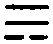
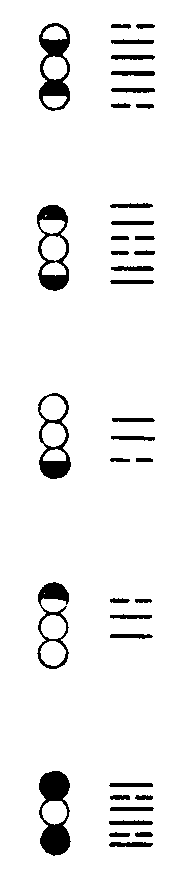

卍新纂大日本續藏經 第63冊
No.1235 智證傳 (1卷)
【宋 慧洪撰 覺慈編】
第 1 卷
大法之衰。由吾儕綱宗不明。以故祖令不行。而魔外充斥。即三尺豎子。掠取古德剩句。不知好惡。計為己悟。僭竊公行。可嘆也。有宋．覺範禪師於是乎懼。乃離合宗教。引事比類。折衷五家宗旨。至發其所祕。犯其所忌而不惜。昔人比之貫高．程嬰．公孫杵臼之用心。噫。亦可悲矣。書以智證名。非智不足以辨邪正。非證不足以行賞罰。蓋照用全。方能荷大法也。充覺範之心。即天下有一人焉。能讀此書。直究綱宗。行祖令。斯不負著書之意。即未能洞明此書。而能廣其傳於天下。以待夫一人焉。能洞明之者。縱未能即酬覺範之志。亦覺範所與也。覺範所著。有僧寶傳．林間錄。與是書相表裏。業已有善刻。金沙于中甫比部。復捐貲刻是書。三集並行於世。亦法門一快事也。有志於宗門者。珍重流通。是所望云。
皇明．萬歷乙酉夏六月既望。僧真可述。
附達觀師書 智證之義。或以維摩受諸觸。如智證釋之。非洪老著書意也。吾究之久矣。當以吾釋為準。藏公切勿疑之。如吾序文醜拙。宜用心與具區公共潤色之。方可入刻。
No. 1235
智證傳(原本分十卷今合為一卷附寶鏡三昧)
涅槃經曰。譬如有人。以雜毒藥用塗大鼓。於眾人中擊之發聲。雖無心欲聞。聞之皆死。唯除一人不橫死者。是大乘典大涅槃經亦復如是。在在處處。諸行眾中。有聞聲者。所有貪欲．瞋恚．愚癡悉皆滅盡。其中雖有無心思念。是大涅槃因緣力故。能滅煩惱。諸結自滅。犯四重禁及五無間。聞是經已。亦作無上菩提因緣。漸斷煩惱。除不橫死一闡提也。又曰。何等名為祕密之藏。猶如∴(伊)字。三點若並。則不成伊。從亦不成。如摩醯首羅面上三目。乃得成伊三點。若別亦不得成。我亦如是。解脫之法亦非涅槃。如來之身亦非涅槃。摩訶般若亦非涅槃。三法各異。亦非涅槃。我今安住如是三法。為眾生故。名入涅槃。如世∴(伊)字。
傳曰。巖頭奯禪師嘗曰。涅槃經此三段義。略似宗門。夫言似則非宗門旨要明矣。然宗門旨要。雖即文字語言不可見。離文字語言。亦安能見哉。臨濟曰。大凡舉唱。須一句中具三玄。一玄中具三要。有玄有要。此塗毒鼓聲也。臨濟歿二百年。尚有聞而死者。夫分賓主。如並存照用。如別立君臣。如從慈明曰。一句分賓主。照用一時行。若會箇中意。日午打三更。同安曰。賓主穆時全是妄。君臣合處正中邪。還鄉曲調如何唱。明月堂前枯樹花。如前語句。皆非一代時教之所管攝。摩醯首羅面上豎亞一目。非常目也。
破色心論曰。於有色處。眼則見色。餘無色處不見色者。此義不然。何以故。以彼夢中。於無色處則見有色。於有色處不見色故。
傳曰。於有色處者。寤時也。而夢時不見。夢中無色處也。而反見色。顛倒也。齊劉瑱之妹。鄱陽王妃也。王為明帝誅。妃追傷成疾。醫所不能治。瑱善畫婦人。陳郡殷蒨善寫人面。瑱畫王寵姬。而使蒨畫王共臨鏡以示妃。妃見之唾罵曰。是固宜蚤死。於是恩情即歇而疾除。蓋因愛心歇則顛倒想滅也。
圭峯密禪師偈曰。作有義事是惺悟心。作無義事是散亂心。散亂隨情轉。臨終被業牽。惺悟不由情。臨終能轉業。
傳曰。朝奉大夫孫于之嫂。年十九而寡。自誓一飯終身。誦法華經不復嫁。于守高安。嫂年已七十餘。面目光澤。舉止輕利。政和六年夏六月。忽收經帙。料理服玩與侍妾。于問其故。笑曰。我更三日死矣。果如期而逝。韓子蒼問予曰。人之將終。有前知者。何術致之。予曰。譬如牛乳。以酵發之。雖緣緣之中。無有作者。久而成酪。非自外來。生乳中故。非自能生。以酵發之。故緣緣成熟。忽然成就。乃有偈。其略曰。酪出乳中無別法。死而何苦欲先知。如某夫人華年休息。白首見效。凡五十餘年。心心無間。自然前知化日。酪出乳中也。然觀圭峯偈語。恐於死時。未得自在。以其皆理障故。如本朝 太祖皇帝將問罪江南。江南後主遣其臣徐鉉入對誦習。以備顧問。且欲以舌辯存國。既見。曰。江南國主。如子事父。以事陛下。柰何欲伐之。 太祖曰。父子異居可乎。鉉愕然無以對。今平生知誦圭峯之偈語。至於臨終為徐鉉愕然者。皆是也。
風穴沼禪師升座曰。世尊以青蓮目顧迦葉。正當是時。且道說箇什麼。若言不說。又成埋沒先聖。語未卒。念法華便下去。侍者進曰。念法華無所言而去。何也。風穴曰。渠會也。明日念與真上座俱詣方丈。風穴問真曰。如何是世尊不說說。真曰。鵓姑樹頭鳴。風穴曰。汝作許多癡福何用。乃顧念曰。如何。對曰。動容揚古路。不墮悄然機。風穴謂真曰。何不看渠下語。
傳曰。汾陽無德禪師作一字歌。其略曰。諸佛不曾說法。汾陽略宣一字。亦非紙墨文章。不學維摩默地。又曰。飲光尊者同明證。瞬目欽恭行正令。真漏泄家風也。昔黃檗嘗遣臨濟馳書至溈山。既去。溈山問仰山曰。寂子。此道人他日如何。對曰。黃檗法道賴此人。他日大行吳．越之間。然遇大風則止。溈山曰。莫有續之者否。對曰。有。但年代深遠。不復舉似。溈曰。子何惜為我一舉似耶。於是仰山默然。曰。將此身心奉塵剎。是則名為報佛恩。風穴暮年常憂仰山之讖。己躬當之。乃有念公。知為仰山再來也。
永嘉尊者曰。日夜精勤。恐緣差故。
傳曰。北齊沙門慧曉。以厭鄉閭。遁居靈巖數十年。有任山令者。自鄉閭來。曉自念離鄉久。思問親舊存沒。詣邑謁令。令適有客。未得通謁。久之。曉忽悟曰。非令慢客。乃我之愛憎耳。何遽懷土哉。取謁書曰。咄哉失念。欻爾還覺。遂去。
三祖大師曰。毫釐有差。天地懸隔。
傳曰。南嶽思大禪師。既獲宿智通。尋復障起。四肢緩弱。不能行步。自念曰。病從業生。業從心起。心源無起。外境何狀。病業與身。都如雲影。如是觀已。顛倒想滅。輕安如故。
傳曰。賢首曰。此中一剎那者。即謂無念。楞伽曰。一切法不生。我說剎那義。初生即有滅。不為愚者說。以一剎那流轉。必無自性故。即是無生。若非無生。則不流轉。是故契無生者。方見剎那也。黃檗慧禪師初謁疏山。問曰。剎那便去時如何。曰。逼塞虗空。汝作麼生去。慧曰。逼塞虗空。不如不去。疏山乃默然。慧出見第一座。問慧曰。汝適祇對之語甚奇。曰。亦似偶然。願為開示。第一座曰。一剎那間還容擬議否。慧於是悟旨於言下。予作偈曰。逼塞虗空。不行而至。而剎那中。寧容擬議。直下便見。不落意地。眼孔定動。則已不是。
還源觀曰。由於塵相。念念遷變。即是生死。由觀塵相。生滅相盡。空無有實。即是涅槃。
傳曰。於色．聲等法。念念分別。名為遷變。觀此色．聲等法起滅無從。當處解脫。先觀己眼曰。是眼即不能自見其己體。自體尚不見。云何見餘物。次觀前境曰。若見是樹。復云何樹。若見非樹。云何見樹。次觀三際曰。若見在是有耶。則過去未來亦應是有。若過去未來是無耶。則見在亦應是無。
金剛般若經曰。若人於此經生淨信者。非於一佛二佛三四五佛。種諸善根。已於無量百千萬億佛所。種諸善根。
傳曰。華嚴經曰。堅翅鳥以龍為食。先觀大海諸龍命將盡者。即以兩翅擘海取而食之。乃知信受此法。非根熟眾生。莫能然也。神鼎諲禪師嘗曰。鳥窠侍者見以布毛吹之。便薦此事。自非久積淨業。曠劫行持。安能如此。汾陽昭禪師亦作偈曰。侍者初心慕勝緣。辭師擬去學參禪。鳥窠知是根機熟。吹毛當下得心安。兩耆年皆首山高弟。必以積淨業．根機熟為言。蓋其淵源出於金剛般若而不可誣也。近世之邪禪乃曰。此安有悟。吹毛而傳悟者。權耳。是所謂自無目。而欲廢天下視也。
破色心論曰。如人夢中。本無女子。而見女人與身交會。漏失不淨。眾生如是。無始世來。虗妄受用。色．香．味．觸等外諸境。皆亦如是。實無而成。
傳曰。所言實無而成者。如佛在時。有弟兄三人聞毗耶離國婬女菴羅婆利。舍衛國婬女須曼那。王舍城婬女優鉢羅槃那。皆有美色。晝夜念之不舍。便夢與之從事。覺已念曰。彼女不來。我亦不往。而婬事得辦。因是而悟一切諸法皆如是耶。於是頓證惟心。魏將張遼。唐將王彥章皆有威名。當時小兒啼不止。其母呼兩人者名。而兒啼止。小兒未識張．王。而聞其名輒啼止。非唯心何哉。
華嚴經曰。毗目仙人執善財手。即時善財自見其身。往十佛剎微塵數世界中。到十佛剎微塵數諸佛所。見彼佛剎及其眾會。諸佛相好。種種莊嚴。乃至或經百千億不可說不可說佛剎微塵數劫。乃至時彼仙人放善財手。善財童子即自見身還在本處。
傳曰。方執其手。即入觀門。見自他不隔於毫端。始終不移於當念。及其放手。即是出定。永明曰。是知不動本位之地。而身遍十方。未離一念之中。而還經塵劫。本位不動。遠近之剎歷然。一念靡移。延促之時宛爾。世尊蓋以蓮為譬。而世莫有知者。予特知之。夫蓮方開華。時中已有子。子中已有蔤。因中有果。果中有因。三世一時也。其子分布。又會屬焉。連續不斷。十方不隔也。
維摩經曰。文殊師利又問。生死有畏。菩薩當何所依。維摩詰言。菩薩於生死畏中。當依如來功德之力。文殊師利又問。菩薩欲依如來功德之力。當於何住。答曰。菩薩欲依如來功德之力。當住度脫一切眾生。
傳曰。菩薩運心。非止利他。乃所以自利。故前聖以宏法度生為急。栽培如來功德之力也。休舍優婆夷自說得菩薩安隱幢。以眾生未離生死。菩薩不自取安隱故。菩薩雖達生死性空。於生死有畏。未為究竟安隱無憂。若能入生死教化眾生。達生死及眾生而能教化者。總涅槃行。無出無沒。方名離憂安隱幢。
二祖大師問達磨曰。我心未寧。乞師與安。達磨曰。將心來與汝安。對曰。覓心了不可得。達磨曰。與汝安心竟。
傳曰。予聞東坡之語曰。如人病眼。以求醫與之光明。醫師曰。我但有除翳藥。且無與明藥。明如可與。還應是翳。東坡可謂性與道會者也。
永嘉曰。大丈夫。秉慧劍。般若鋒兮金剛燄。非但空摧外道心。早曾落卻天魔膽。
傳曰。予初讀斯文。意其人神觀英特。威掩萬僧。凜然不可犯干。及見其遺像。頹然坐匡牀。伽棃取次如少年宣律師。乃知心智猛利。故吐詞等刀鋸。決不可以狀貌求也。法華經曰。如是二萬佛。皆同一字。號日月燈明。又同一姓。姓頗羅墮。頗羅墮。此云利根。亦名捷疾。亦名滿語。於一切法門。以利根．捷疾．滿語明之者。乃可出離生死。梁劉歊事佛精勤。忽有老人無因而至。曰。君心力堅猛。必破生死。歊於化時果有靈驗。今學者名為走道而已。其實懶墯迷醉於色．聲等法。如蠅為唾所粘。味永嘉之平生。如香象擺壞鎖繮。自在而去。蓋真是比丘也。
維摩經曰。直心是道場。無虗假故。
傳曰。所謂擇法眼者。前聖授手。首楞嚴曰。諸修行人。不能得成無上菩提。乃至別成聲聞．緣覺。及成外道諸天魔王。及魔眷屬。皆由不知二種根本。錯亂修習。猶如煑沙欲成佳饌。縱經塵劫。終不能得。云何二種。阿難。一者無始生死根本。則汝今者與諸眾生。用攀緣心為自性者。二者無始菩提涅槃元清淨體。則汝今者識精元明。能生諸緣。緣所遺者。即直心也。攀緣心。即虗假也。永明曰。心者。信也。謂有前識法隨相行。則煩惱名識。不名心也。意者。憶也。憶想前境起於妄。並是妄識。不干心事。心非有無。有無不染。心非垢淨。垢淨不汙。乃至迷．悟．凡．聖．行．來．去．住。並是妄識非心。心本不生。今亦無滅。若知自心如此。佛亦然。而長沙偈曰。學道之人不識真。只為從前認識神。無始時來生死本。癡人喚作本來人。今時邪禪乃相傳授。以揚眉瞬目。豎拂拈槌為極則。佛法幾何不平沈哉。圓覺經曰。眾生妄見流轉。厭流轉者。妄見涅槃。由此不能入清淨覺。非覺違拒諸能入者。有諸能入。非覺入故。謂脫有能入覺道者。但成小乘。非能入覺。故曰。非覺入故。
金剛般若經曰。如來於然燈佛所。有法得阿耨多羅三藐三菩提不。不也。世尊。如我解佛所說義。佛於然燈佛所。無有法得阿耨多羅三藐三菩提。佛言。如是．如是。須菩提。實無有法。如來得阿耨多羅三藐三菩提。須菩提。若有法。如來得阿耨多羅三藐三菩提者。然燈佛則不與我授記。汝於來世。當得作佛。號釋迦牟尼。以實無有法得阿耨多羅三藐三菩提。是故然燈佛與我授記。作是言。汝於來世。當得作佛。號釋迦牟尼。何以故。如來者。即諸法如義。若有人言如來得阿耨多羅三藐三菩提。須菩提。實無有法。佛得阿耨多羅三藐三菩提。須菩提。如來所得阿耨多羅三藐三菩提。於是中無實無虗。
傳曰。如曰如來所得。於是中無實無虗者。達磨東來不言之意也。而世罕能知之。知之而罕能言之。東坡曰。如來得阿耨多羅三藐三菩提。曰以無所得故而得。舍利弗得阿羅漢道。亦曰以無所得故而得。如來與舍利弗若是同乎。曰。何獨舍利弗。至於百工賤技。承蜩．意鉤．履狶．畫墁。未有不同者也。論道之大小。雖至於大菩薩。其視如來猶若天淵然。及其以無所得故而得。則承蜩．意鉤．履狶．畫墁。未有不與如來同者也。東坡之言吾法。如杜牧論兵。曰。如珠在盤。至於圓．轉．橫．斜。不可得知。所可知者。珠不出盤耳。如來應迹。本以度生。有法可傳。則即時授與。但與授記者。明知無法可傳也。
棗柏曰。華嚴第三會。於須彌山頂上說十住。表入理契智。非生滅心所得至故。如須彌山在大海中。高八萬四千由旬。非手足攀攬所及。明八萬四千塵勞山。住煩惱大海。於一切法。無思無為。即煩惱海枯竭。塵勞山便成一切智山。煩惱海便成性海。若起心思慮。有所攀緣。則塵勞山愈高。煩惱海愈深。不可至其智頂。
傳曰。首楞嚴曰。汝但棄其生滅。守於真常。常光現前。根．塵．識心。應時消落。故維摩大士現神力。即時須彌燈王佛遣三萬二千師子座。高廣嚴淨。來入維摩詰室。諸菩薩．大弟子．釋梵四天王等。昔所未見。其室廣博。悉包容三萬二千師子座。無所妨礙。寶覺禪師曰。以師子座之高廣。毗耶室之狹小。佇思其間。即成妨礙。嘗問轉運判官夏倚。汝言。情與無情共一體。時有狗臥香卓下。乃以壓尺擊香卓。又擊狗曰。狗有情即去。香卓無情即住。如何得成一體。倚不能對。寶覺曰。纔入思惟。便成剩法。前聖所知。轉相傳授。皆此旨也。而學者莫能明。如言彈指而五百毒龍屈伏。女子之定亦出。尤昭著明白者也。溈山嘗語仰山曰。寂子速道。莫入陰界。而仰山曰。慧寂信位亦不立。予恨仰山極力道不盡。
華嚴．十地品曰。生死皆由心所作。心若滅者生死盡。又曰。隨順無明起諸有。若不隨順諸有斷。
傳曰。譬如有人。畏影而逃日中。其行愈疾。而影愈隨。休於樹陰。則影自滅。三尺童子知之。而學者畏生死。乃不息滅妄心。是不類也。又如日親君子。則小人自疏。日親小人。則君子自遠。市井庸人知之。而學者畏流轉之苦。甘隨順無明。是首越而之燕者也。夫知心寂滅。則不復故起現行。不與妄合。則自然本智現前。此二種。第約之心耳。非加功也。
三祖粲禪師既以大法付四祖信禪師。乃祝曰。慎勿言自我處得法來。
傳曰。易解曰。眾人之志。不出於飲食男女之間與。凡養生之資。其資厚者其氣強。其資約者其氣微。故氣勝志而為魄。賢聖則不然。以志一氣。清明在躬。志氣如神。雖祿之天下。窮至匹夫。無所損益也。故志勝氣而為魂。眾人之死為鬼。而聖賢為神。非有二知也。志之所在者異也。予以其說觀三祖。知其為志勝者也。嵩禪師曰。此蓋祖師以名迹為道之累。故雖師承。亦欲絕之。然則不言自粲公所得法。便真非嗣祖者耶。是大不然。粲公於時念達磨．可祖宏法之艱難。皆為邪師憎害。痛自慎耳。便謂棄絕師承可乎。
黃蘗運禪師曰。凡人臨欲終時。但觀五蘊皆空。四大無我。真心無相。不去不來。生時性亦不來。死時性亦不去。湛然圓寂。心境一如。但能如是直下頓了。不為三世所拘繫。便是出世人也。切不得有分毫趨向。若見善相諸佛來迎。及種種現前。亦無心隨去。若見惡相種種現前。亦無怖畏。但自忘心。同於法界。便得自在。此是要節。
傳曰。此黃蘗一時為裴相國之言也。教其忘心。當不必臨欲終時。乃作此觀。何以知之。圓覺曰。居一切時。不起妄念。於諸妄心。亦不息滅。住妄想境。不加了知。於無了知。不辯真實。故其偈曰。末世諸眾生。心不生虗妄。佛說如是人。現世即菩薩。圭峯科以為忘心頓證。予以是觀前義。知其為方便說也。予嘗閱運公遺事。始名晞運。會昌之厄。以白帕蒙首。易名神運。宣宗登極。復教。仍名晞運。此叢林未知者也。
入大乘論曰。諸法體相。世間現見。云何言無耶。曰。凡愚妄見。此非可信。生滅之法。皆悉是空。生滅流轉。無暫停時。相似相續故。妄見有實。猶如燈燄。念念生滅。凡夫愚人。謂為一燄。
傳曰。涅槃曰。如燈雖念念滅。而有光除破暗冥。念等諸法。亦復如是。如眾生食。雖念念滅。亦能令飢者而得飽滿。譬如上藥。雖念念滅。亦能愈病。日月光明。雖念念滅。亦能增長草木。蓋一切諸法念念滅絕。而今現見者。相似相續故。首楞嚴曰。諦觀法法何狀。則知但自燈明。法自無暗。明暗俱空。無作無取。明若有作。不應容暗。暗若可取。不應受明。今觀夜室之暗。何自而來。忽有燈燄。暗何所往。石頭曰。當明中有暗者。以明無作故。當暗中有明者。以暗無取故。
傳曰。溈山嘗曰。凡聖情盡。體露真常。理事不二。即如如佛。而學者不能深味此語。苟認意度而已。譬如眾盲捫象。隨所得之為是。故象偏為尾．為蹄．為腰．為牙。而全象隱矣。般若經曰。無二無二分。無別無斷故者。真常也。非凝然一物。卓不變壞之常也。而解法華者曰。佛音深妙。觸處皆聞。超越凡聖。則其舌廣長。高出梵世。此殆所謂隨語生解。謬矣乎。
五十計較經曰。菩薩問佛言。罪生復滅。何以我了不見。佛問諸菩薩。汝曹心寧轉生不。諸菩薩報言。我心轉生。設我心不轉生。亦不能與佛共語。佛問諸菩薩。言若心生時。寧還自覺心生不。諸菩薩言。我但識見因緣時。不覺初起生時。佛言。如汝所說。尚不能知心初生時。何能無罪。
傳曰。諸菩薩疑既曰有罪。我獨不見。而世尊曰。汝不能知心初生。則罪有而不見也。永明曰。故知不察最初一念因成之假。寧免後念相續成事之過乎。吾以是知一切生死煩惱。皆因不覺故。若智為先導。則咎何由生。若了心外無法。則情想不生。不用加功。直入不思議地也。
傳曰。予觀法華經。諸菩薩摩訶薩。從初涌出。以諸菩薩種種讚法而讚於佛。如是時間經五十小劫。是時釋迦牟尼佛默然而坐。及諸四眾亦皆默然五十小劫。佛神力故。令諸大眾謂如半日。夫半日之間歷五十小劫。顛倒想所持也。
唯識論問曰。依信說有四種。一．現見。二．比知。三．譬喻。四．阿含。此諸信中。現信最勝。若無外境。云何世人言我現見此青．黃等物乎。答以偈曰。現見如夢中。見所見不俱。見時不分別。云何言現見。諸凡夫人。煩惱夢中。有所見事。皆如夢中。如初見色。不知色義。後時意識分別。然方了知。以意識分別時。眼等識已先滅故。以一切法念念不住故。以見色時。未有意識。意識起時。即無眼等識。
傳曰。譬如世人同看文字。不識字者但見紙墨。義理了不關思。而識字者但見義理。不礙紙墨也。不識字者。五識現量也。而識字者。意識之境也。天台宗以五識名退殘。謂是故也。故曰。見所見不俱。夫紙墨文字。所以傳義理。義理得。則紙墨文字復安用哉。
曹山正命食。
傳曰。瑜伽師地論曰死有三種。謂壽盡故．福盡故．不避不平等故。當知亦是時非時死。或由善心。或不善心。或無記心。云何壽盡死。猶如有一隨感壽量滿盡故死。此名時死。云何福盡故死。猶如有一資具缺故死。云何不避不平等故死。如世尊說九因九緣。未盡壽量而死。何等為九。謂食無度量．食時不宜．不消復食．生而不吐．熟而持之．不近醫藥．不知於己若損若益．非時非量．行非梵行。此名非時死。予以是觀之。乃知食而食。即不枉死。故名正命食。黃蘗曰。今時纔出來者。只欲多知多解。廣求文義。喚作修行。不知多知解。翻成壅塞。唯多與兒酥乳。消與不消都總不知。三乘學道人皆此樣。盡名食不消。食不消者。所謂知解不消。皆為毒藥。盡向生滅邊收。真如之中。無此事故。以此知曹山貴正命食。立三墮。
不斷聲色墮．隨墮．尊貴墮。
傳曰。維摩經曰。為壞和合相故。應取食。為不受故。應受彼食。以空聚想。入於聚落。所見色。與盲等。所聞聲。與響等。所齅香。與風等。所食味。不分別。受諸觸。如智證。知諸法。如幻相。無自性。無他性。本自不然。今則無滅。此不斷聲色墮所由立也。又曰。須菩提。不見佛．不聞法。彼外道六師。富蘭那迦葉．末伽棃拘賒棃子．刪闍夜毗羅胝子．阿耆多翅舍欽婆羅．迦羅鳩馱迦旃延．尼揵陀若提子等。是汝之師。因其出家。彼師所墮。汝亦隨墮。乃可取食。此隨墮之所由立也。又曰。謗諸佛。毀於法。不入眾數。終不得滅度。汝若如是。乃可取食。此尊貴墮之所由立也。予嘗深觀曹山。其自比六祖無所媿。以其蕩除聖．凡之情。有大方便。南泉曰。三世諸佛不知有。黧奴白牯却知有。乃不如曹山止言一墮字耳。
唐．萬回和尚偈曰。明暗兩忘開佛眼(一本云黑白兩忘)。不繫一法出蓮叢。真空不壞靈智性。妙用恒常無作功。聖智本來成佛道。寂光非照自圓通。
傳曰。首楞嚴曰。緣見因明。暗成無見。不明自發。則諸暗相永不能昏。夫不因明塵而自發。不為暗塵之所昏。則佛眼開矣。又曰。餘塵尚諸學。明極即如來。夫以纖塵未盡。則未至等妙。所以貴不繫一法也。佛眼既開。則不受一法。然寂光非照。故首山臨終偈曰。白銀世界金色身。情與無情共一真。明暗盡時俱不照。日輪午後示全身。果午後泊然而化。黑白兩忘之效也。
淨業障經曰。佛告比丘。一切諸法。本性清淨。然諸凡夫愚小無智。於無有法不知如故。妄生分別。以分別故。墮三惡道。
傳曰。如言以分別故。墮三惡道。則不分別。遂成無上佛果乎。曰不分別。則機關木偶耳。非能得道也。維摩經曰。無我無造無受者。善惡之業亦不忘者。遮凡夫愚小墮增益損減謗。而密示無生之妙也。永嘉曰。誰無念。誰無生。若實無生無不生。喚取機關木人問。求佛施功早晚成。又曰。了即業障本來空。未了應須償夙債。今推其効。以盡其執情。世間法。殺人者死。而怒波覆舟。舟人皆死。不聞水與風有罪。出世間法先論因果。故曰。假使百千劫。所作業不忘。而埜火燒山林。禽蟲皆死。而火亦速滅。不聞火受三惡道苦。可深思之。
雪峯禪師。函葢乾坤句。截斷眾流句。隨波逐浪句。
傳曰。宗師約法。以定綱宗。以簡偏邪。如雪峯三句。玄沙嘗言之曰。是汝諸人見有嶮惡。見有大蟲．刀．劍諸事來逼汝身命。便生無限怖畏。恰如世間畫師。自畫作地獄變相。畫大蟲．刀．劍了。好好地看著。却自生怕怖。亦不是別人與汝為過。汝如今欲免此至惑麼。但識取金剛眼睛。若識得。不曾教有纖塵可得露現。何處更有虎狼刀劍。解嗋嚇得汝。直至釋迦。如是伎倆。亦覓出頭處不得。所以我向汝道。沙門眼。把定世界。函葢乾坤。不漏絲髮。何處更有一物為汝知見。如是出脫。如是奇特。何不究取。此函葢乾坤句也。又曰。鐘中無鼓響。鼓中無鐘聲。鐘鼓不交參。句句無前後。如壯士展臂。不借他力。如師子游行。豈求伴侶。此截斷眾流句也。又曰。大唐國內宗乘。未有一人舉倡。設有一人舉倡。盡大地人失却性命。無孔鐵鎚相似。一時亡鋒結舌去。汝諸人賴我不惜身命。共汝顛倒知見。隨汝狂意。方有申問處。我若不共汝與麼知聞去。汝向什麼處得見我。此隨波逐浪句也。
傳曰。所言善現者。百丈曰。本有之性。不可名目。本來不是凡．不是聖．不是垢淨．亦非空有．亦非善惡。若與諸染法相應。名天人二乘界。所言惡現者。搜神記曰。蛇千年則能斷已復續。淮南子曰。神蛇自斷其身。而自相續。隋煬帝遣使於嶺南瀕海。窮山求此蛇。長三尺許。色錦文而似金。熟視微黑。解食肉而不毒。人欲令自斷。則觸之令怒若不勝憤。則輒斷而為三四。若刀截焉。其皮骨之理亦有血。怒定久。乃又相就。而相連續如故。隋著作郎鄧隆曰。此靈蛇也。能自斷。不必千歲。夫天人二乘界。例能他身飛升。善念增長之力也。蛇能自斷且千歲。惡念增長之力也。
傳曰。永明曰。緣起佛種者。報身佛。非法身佛也。不知永明何所據依而為此言。經以一乘為言。則寧當分別法．報身乎。所謂是法住法位者。馬鳴所言隨順世間種種知故。世間之相既曰種種。則非以本自無性。而皆從緣起何哉。知其緣起而無生。即是佛種。所謂世間相常住者。馬鳴所言一切法常靜。無有起相。予童子時。聞三峯靘禪師誦迦葉波偈曰。諸法從緣生。諸法從緣滅。我師大沙門。常作如是說。心曉然愛之。既落髮。游方學道。讀棗栢論曰。有作之法。難成隨緣。無作易辦。作者勞而無功。不作隨緣自就。無功之功。功不虗棄。有功之功。功皆無常。多劫積修。終歸敗壞。一念緣起無生。超彼三乘權學等見。於是頓見迦葉波說偈之意。維摩謂文殊師利曰。不來相而來。不見相而見。文殊師利曰。如是。居士。若來已更不來。若去已更不去。所以者何。來者無所從來。去者無所至去。可見者更不可見。與法華同旨也。
清涼國師答復禮法師所問真妄偈曰。本淨本不覺。由茲妄念起。能迷非所迷。安得長相似。
傳曰。圓覺會上。金剛藏菩薩所問世界始終生滅。前後有無之故。而世尊先令息滅妄心。淨諸業障。菩薩所問。一切眾生。本性清淨。云何染汙。而世尊但曰。為有我．人．眾生。及與壽命。終不明告其所以然。清涼言本淨本不覺。則含其無性之旨。深得世尊法施之式。何以知之。大經疏曰。一切法有二。一是所迷。謂緣起不實。故如幻也。緣成。故無性也。二是能迷。謂徧計無物。故如空也。妄計。故無相也。又以不覺。故不知有。以不信。故不承當。但起無明。空成倒想耳。
棗栢曰。十定品法門。其定名入剎那際。如三乘說。八十生滅為一剎那。八十剎那為一念。此明三乘說。如此一乘。但以剎那是極短促。思慮不及之故。終不別論有生滅。明如來出世。始終不離剎那際。為一乘道理情解。有以情解者。疑網不除。且信佛語。自疑不斷。
傳曰。溈山問香嚴曰。我不問汝經論義理種種知見。汝但向父母未生前道取一句。香嚴曰。和尚替我道。溈山曰。道得即是我三昧。於汝何益。於是香嚴泣辭溈山。曰。畫餅不可充飢。今生不復學識。且作箇長行粥飯僧。遂去止南陽。菴以休息焉。久之。一日糞除瓦礫擊竹。笑曰。溈山大慈。恩踰父母。當日若為我說却。何處有今日。如香嚴。乃可稱自疑已斷。
傳曰。洞上宗旨。語忌十成。十欲犯。犯則謂之觸諱。如五位曰。但能不觸當今諱。也勝前朝斷舌才。宏覺蓋洞山之高弟也。而所答之語如此。豈非觸諱乎。曰。東坡最能為譬。嘗曰。以吾之所知。推至其所不知。嬰兒生而導之言。稍長而教之書。口必至於忘聲而後能言。手必至於忘筆而後能書。此吾之所知也。口不能忘聲。則語言難於屬文。手不能忘筆。則字畫難於刻雕。及其相忘之至。則形容心術。酬酢萬物之變。忽然而不自知也。夫不犯諱。忌十成者。法也。宏覺不忘法。何以能識宗。金剛般若曰。一切賢聖皆以無為法而有差別。覺以之。
提婆曰。稟明於心。不假外也。
傳曰。提婆菩薩。博識強記。才辯絕倫。名震五天。然猶以人不信用其言為憂。天竺有大自在天人。身真金色。高二丈。人有所求。皆如所願。提婆造廟見之。萬眾隨入。像果瞬視若怒。提婆曰。神則神矣。何其小哉。正當以威靈感人。智德化物。而假金為軀。玻瓈為目以妖世。非所望也。即梯其肩。鑿出目睛。觀者疑之。曰。大自在天乃為一小婆羅門所折困耶。提婆曉人曰。神明遠大。故以近事試我。我得其心。故敢爾也。於是辦供。是夜大自在天降以受之曰。汝得我心。人得我形。汝以心供。人以質饋。知而敬我者汝。畏而誣我者人。然汝供甚美。但乏我所欲。提婆曰。神須何物。大自在天人曰。我缺左目。能施我乎。提婆笑。即出自己目與之。愈出而愈不竭。自旦及暮。出目睛數萬。神讚曰。善哉摩衲。真上施也。欲何所求。提婆曰。我稟明於心。不假外也。予嘗笑提婆顛倒。既曰稟明於心。不假外也。則亦安用求神。欲人信用其言乎。方曰不假於外而求神。如醉夫謂人曰吾平生不解飲也。
曹山本寂禪師偈曰。從緣薦得相應疾。就體消停得力遲。瞥起本來無處所。吾師暫說不思議。
傳曰。予以是觀之。千聖皆稱此一念之心起時了不可得。是真不思議也。離則決定無別殊勝。故如是了知。豈不疾乎。華嚴經曰。以少方便。疾成菩提。曰。然則學者何為而不信耶。曰。如竹林善會禪師為道吾發之。以見船子。言下省悟。既去而回顧。船子笑曰。這漢疑我別有也。於是覆其舟。蓋信力尚微。未大通透故耳。
法華經曰。爾時龍女有一寶珠。價值三千大千世界。持以上佛。佛即受之。龍女謂智積菩薩．尊者舍利弗言。我獻寶珠。世尊納受。是事疾不。答言。甚疾。女言。以汝神力。觀我成佛。復速於此。當時眾會。皆見龍女忽然之間。變成男子。具菩薩行。即往南方無垢世界。坐寶蓮華。成等正覺。
傳曰。棗栢曰。此義如華嚴經所說即不然。但使自無情見。大智踰明。萬法體真。無轉變相。如維摩經舍利弗謂天女曰。何故不轉女身。天女謂舍利弗。我十二年來求女身相了不可得。當何所轉。菴提遮女謂舍利弗。自男生我女。當知萬法。本自體如。有何可轉。如入法界品善財童子善知識。文殊．普賢．比丘．比丘尼．長者．童子．優婆夷．童女．仙人．外道。五十三人。各各自具菩薩行。自具佛法。隨諸眾生。見身不同。不云有轉。若以法眼觀。無俗不真。若以世間肉眼觀。無真不俗。以法華經對權教三根。見未盡者令我信種。且將女相速轉成佛。令生奇特。方始發心。趣真知見。不堪本法。而起善根。此明且引三權令歸一實。又破彼時劫定執三僧祇。令於剎那。證三世性。本來一際。無始無終。稱法平等。裂三乘之見網。撤菩薩之草菴。令歸法界之門。入佛真實之宅。故令龍女成佛。明非過去久修。年始八歲。又表今非舊學。轉女時分。不逾剎那。具行佛果。無虧毫念。法本如是。自體無時。權學三根。自將見隔。迷自實法。反稱為他。不知躬己。本事如斯。全處宅中。猶懷滯見。云何界外。懸指僧祇。此見不離。定乖永劫。回心見謝。方始舊居。何如今時。滅諸見業。徒煩多劫。苦困方回。如華嚴經法界緣起門。明凡聖一真。猶存見隔。見存即凡。情亡即佛。稱性緣起。俯仰進退。屈伸謙敬。皆菩薩行。無有一法可轉變相。有生住滅。故不同龍女轉身成佛。予以謂龍旁生。女有五障。八歲非久積功力。忽然之頃。非歷塵劫。乃化而成佛者。超越諸趣。脫離業果。凌跨十世。猛利成就之象也。不欲正言。故以象示。意使學者自悟耳。便以為實法。較兩經而優劣之。其可哉。然則方等深經。有正言之者乎。曰。首楞嚴曰。金剛王寶覺。彈指超無學。華嚴曰。超諸方便成十力是也。
永明禪師曰。匿蹟韜光。潛行密用。
傳曰。明山賓困乏。貨所乘牛。既售受錢。乃謂買者曰。此牛經患漏蹄。然療差已久。恐後脫發。無容不相語。買者遽追受錢。孔嵩家貧。變姓名傭於阿里。范式為牧伯。行部到新野。縣選嵩導騎迎式。式見而識之。呼嵩把臂謂曰。非孔仲山耶。對之嘆息。欲與之俱載而去。嵩以為先傭未竟。不肯去。大智度論曰。譬如醫師。治風狂人。望見詬罵。而醫師但欲驗其所施之術。不恤其狂。行人調心。亦復如是。故二祖大師既老。出入市里。混於婬坊酒肆之間。有嘲之者。答曰。我自調心。非干汝事。此韜光密用者也。
金剛般若三性。依他．徧計．圓成實智。
傳曰。法華會上。一切眾生喜見菩薩。供養日月淨明德佛。身服諸華香油。滿千二百歲已。香油塗身。又以天寶衣而自纏身。灌諸香油。以神通力願。而自然身。光明徧照八十億恒河沙世界。其中諸佛同時讚言。善哉。善哉。善男子。是真精進。是名真法供養如來。乃至作是語已。而各默然。其身火然千二百歲。過是已後。其身乃盡者。離徧計執。證人空智之象也。作如是法供養已。命終之後。復生日月淨明德佛國中。乃至日月淨明德佛告一切眾生喜見菩薩曰。善男子。我涅槃時到。滅盡時至。汝可安施牀座。我於今夜。當般涅槃。即以海此岸栴檀為[卄/積]。供養佛身。而以燒之。火滅已後。收取舍利。作八萬四千寶瓶。以起八萬四千塔。於是塔前。然百福莊嚴臂七萬二千歲而以供養者。離依他執。得法空智之象也。故天台曰。身相既盡。法執亦亡。於時天．人．阿脩羅等。見其無臂。憂惱悲哀。而作是言。此一切眾生喜見菩薩。是我等師。教化我者。而今燒臂。身不具足。於是菩薩於大眾中立此誓曰。捨我兩臂。必當得佛金色之身。若實不虗。令我兩臂還復如故。作是誓已。自然還復者。二執既盡。證圓成實智。然非滅絕身臂而證。故曰還復如故。蓋嘗深觀之。盡身相則曰千二百歲。十二緣生所成之業趣也。盡法執則曰七萬二千歲。七識染汙。意所執持也。身相以生言之。法執以死言之。身相法執。不出於死生之域耳。
法華經曰。如來明見三界之相。無有生死。若退若出。亦無在世及滅度者。非實非虗。非如非異。不如三界。見於三界。如斯之事。如來明見。無有錯謬。
傳曰。僧問天台雲居智禪師曰。性即清淨。不屬有無。因何有見。答曰。見無所見。僧曰。無所見。因何更有見。答曰。見處亦無。僧曰。如是見時。是誰之見。答曰。無有能見者。僧曰。究竟其理如何。答曰。汝知不。妄計為有。即有能．所。乃得名迷。隨見生解。便墮生死。明見之人即不然。終日見未嘗見。求見處體相了不可得。能．所俱絕。名為見性。予以是觀能．所既絕。則無生死。生死既無。則何有三界之相。是謂明見也。
華嚴十定品曰。爾時。世尊在摩竭提國。阿蘭若法菩提場中。始成正覺。於普光明殿。入剎那際諸佛三昧。以一切智自在神通力。現如來身清淨無礙。無所依止。無有攀緣。住奢摩他。最極寂靜。具大威德。無所染著。能令見者。悉得開悟。隨宜出興。不失於時。恒住一相。所謂無相。
傳曰。法華經曰。世尊結加趺坐。入於無量義處三昧。身心不動。而彌勒菩薩曰。今佛入於三昧。是不可思議。以是觀之。則所言無量者。非多多無數量之謂也。苟為數量之量。則不應言處。蓋無念礙之量耳。何以知之。以前文曰。說大乘經。名無量義。教菩薩法。佛所護念。不言處也。推十定品所示入剎那際諸佛三昧同旨。至於隨宜出興。不失於時。則善用其心者也。
起信論曰。真實空者。從本以來。一切染法不相應故。離一切法差別相故。無有虗妄分別心故。應知真如非有相．非無相．非有無相．非非有無相．非一相．非異相。略說以一切眾生妄分別心所不能觸。故立為空。據實道理。妄念非有。空性亦空。以所遮是無。能遮亦無故。言真實不空者。由妄念空無故。即顯真心。常恒不變。清淨圓滿。故名不空。亦無不空相。以非妄念心所行故。唯離念智之所證故。
傳曰。予觀江西馬祖而下諸奇衲。如汾州南泉．歸宗百丈。皆冠絕一時。然說法與諸祖議論冥契者。百丈又冠諸衲。嘗曰。但了諸法不自生。皆從自己一念妄想。顛倒取相而有。知心與境不相到。當處解脫。一一諸法。當處寂滅。當處道場。本有之性。不可名目。本來不是凡．不是聖．不是垢淨．亦非空有．亦非善惡。若與諸染法相應。名天．人二乘界。若垢淨心盡。不住繫縛。不住解脫。無一切有為無為。縛脫平等心量。處於生死。其心自在。畢竟不與諸虗妄．塵勞．蘊界．生死。諸入和合。迥然無計。一切不拘。去留無礙。往來生死。如門開相似。此論與馬鳴所示無所優劣。然深信而親證者。首山念法華．舜峯欽禪師尤昭著者也。
金剛般若經曰。須菩提。諸菩薩摩訶薩應如是生清淨心。不應住色生心。不應住聲．香．味．觸．法生心。應無所住而生其心。
傳曰。楞伽經曰。一切法不生。我說剎那義。夫言法本不生足矣。安用復名剎那義乎。法華經曰。諸法空為座。夫言諸法空足矣。安用復稱座乎。曰。但言諸法本不生。與言諸法空者。即是斷滅見。故以不生而言剎那。諸法空而言座也。所言應無所住而生其心。蓋三世如來法施之式也。
永嘉尊者曰。取不得。捨不得。不可得中只麼得。
傳曰。可以取。則法身有剩。可以捨。則虗空可逃。離是取捨之心。則如絮毬百衲。置之閒處。天寒歲晚。有時而得用也。莊周非能知此者也。而其言有可觀。曰。黃帝遊於赤水之北。登崑崙之丘南望。遺其玄珠。使智索之而不得。使离婁索之而不得。乃因罔象而得之。黃帝曰。異哉。罔象乃可得之。問曰。莊周既曰非能知之。則其語何其似之親耶。曰。牛乳驢乳。其色俱白。牛乳則能出生酥酪。至於驢乳。裂之則成滓穢。然不識牛乳者。指驢乳似之。故予不廢莊周之論也。
毗舍浮佛偈曰。假借四大以為身。心本無生因境有。前境若無心亦無。罪福如幻起亦滅。
傳曰。首楞嚴曰。由塵發知。因根有相。相見無性。猶如交蘆。夫知由前塵而發者。所謂見分也。相因眼根而有者。所謂相分也。相．見俱無有性者。心境互生。各無自體。心不自立故。由塵發知。境不自生故。因根有相。二虗相倚故。猶若交蘆。維摩經曰。無我無造無受者。善惡之業亦不亡。予政和元年十月謫海外。明年三月館於瓊州之開元寺儼師院。海上無經籍。壁間有此偈。日夕研味。頓入無生。身心超然自得也。
復禮法師曰。觀業者。業因心起。心為業用。業引心而受形。心隨業而作境。然則因業受身。身還造業。從心作境。境復生心。若影隨形而曲直。猶響隨聲而大小矣。
傳曰。廣百論偈曰。眼中無色識。識中無色眼。色內二俱無。何能令見色。僧靈潤嘗修此觀曰。捨外塵邪執。得意言分別。捨唯識想。得真法界。前觀無相。捨外塵相。後觀無生。捨唯識想。嘗與法侶登山游覧。埜火四合。眾皆奔散。潤獨安步顧陟。謂法侶曰。心外無火。火實自心。謂火可逃。寧能免火。及火至潤。而潛然息滅。
楞伽經偈曰。由自心執著。心似外境轉。彼所見非有。是故說唯心。
傳曰。曹谿六祖隱晦時號盧居士。嘗客廣州精舍。夜經行。聞兩僧論風旛之義。一曰風動。一曰旛動。六祖前曰。肯使流俗輒預高論否。正以風旛非動。仁者心動耳。法空禪師深居五臺山。每夜必聞有聲。名曰空禪。法空患之。久而自悟曰。皆我自心之境。安有外聲哉。以法遣之。自後遂絕。夫言彼所見非有者。以風旛相待。無有定屬。以無定屬。緣生則名無生。六祖所示見境既爾。則空禪所悟聞塵亦然。首楞嚴曰。見聞如幻翳。三界若空華。聞復翳根除。塵消覺圓淨。淨極光通達。寂照含虗空。却來觀世間。猶如夢中事者。詎不信夫。
華嚴經曰。佛子如來以一切譬喻說種種事。無有譬喻能喻此法。何以故。心智路絕。不思議故。
傳曰。杜順和尚。文殊師利菩薩之化身也。作法身偈曰。懷州牛喫禾。益州馬腹脹。天下覓醫人。炙豬左膊上。傅大士。彌勒菩薩之化身也。亦作法身偈曰。空手把鋤頭。步行騎水牛。人從橋上過。橋流水不流。過去古佛開示之語如此。而學者望之。如壁立萬仞。非手足攀攬之境。幽州盤山積禪師曰。若言即心即佛。今時未入玄微。若言非心非佛。猶是指蹤之極則。向上一路。千聖不傳。學者勞形。如猿捉月。積公迨庶幾知此乎。
楞伽經曰。前聖所知。轉相傳授。妄想無性。
傳曰。無性之妙。佛祖所祕。蓋嘗密演。未嘗顯說。何以知之。圓覺曰。圓覺自性。非性性有。循諸性起。無取無證。維摩曰。不生不滅。是無常義。十地品曰。以不了第一義故。號為無明。起信曰。以不如實知真如法一故。不覺而有妄念。夫言非性性有。不生滅而無常。及不了知。皆以無性故也。而其言皆遮之者。欲學者自悟。此予所謂密演者也。今則明告無性。是謂顯說。
法華經曰。入如來室。著如來衣。坐如來座。爾乃應為四眾廣說斯經。如來室者。一切眾生中大慈悲心是。如來衣者。柔和忍辱心是。如來座者。一切法空是。安住是中。然後以不懈怠心。為諸菩薩及四眾廣說是法華經。
傳曰。室者。常寢處。衣者。常被服。座者。常休息。故知傳佛心宗者。常寢處於慈悲。被服於忍辱。休息於法空。故曰安住是中也。永明曰。食肉者斷大慈悲種。不可不慎。太平興國中。建陽僧辯聰游五臺山寺。寺之上座僧老。為眾輕易。聰獨敬事之。將還京師。老僧付聰書。使於城北尋勃賀投之。聰辭去。竊發而觀。無他詞。但曰。度眾生畢。蚤來蚤來。若更強住。却恐造業。聰大驚。復緘封之。既至於廣濟河側。聞小兒呼勃賀。聰問勃賀何在。小兒指大豬。豬項丳金環。臥街西牆下。聰扣牆問屠誰氏。曰。趙生家也。問此豬何名勃賀。曰。唯食勃荷。故里中小兒以名之。吾日烹千百豬。豬犇佚難驅。以此豬引導之。則纍纍就死。畜之十五年矣。聰以書投之。勃賀急食。忽然人立而化。
維摩經曰。居士即以神力空其室內。除去所有及諸侍者。唯置一牀。以疾而臥。
傳曰。百丈大智禪師曰。夫學道人。若遇種種苦樂。稱意．不稱意事。心無退屈。不念一切名聞利養。不貪一切功德利益。不為世間諸法所滯礙。唯無親無愛。苦樂平懷。麤衣遮寒。糲食活命。兀兀如愚。如聾如瘂。稍有相應分。黃蘗運禪師曰。唯置一牀。寢疾而臥者。心不起也。如人臥疾。攀緣俱息。妄想歇滅。即是菩提。耆域以晉惠帝時至洛陽。萬僧為作禮。斂眉曰。汝等衣服華飾。皆違法制。非佛意也。漢范曄有言曰。事苦。則矜全之情薄。生厚。故安存之慮深。登高不懼者。胥靡之人也。坐不垂堂者。千金之子也。
大涅槃經曰。所言二諦。其實是一。方便說二。如人醉未吐。見日月轉。謂有轉日及不轉日。醒人但見不轉。不見於轉。轉二為麤。不轉為妙。
傳曰。三藏全是轉之二。如彼醉者。大乘經帶一轉二。而說不轉之一也。起信曰。以一切法本來唯心。實無於念。而有妄心。不覺起念。見諸境界。故說無明。以此義例。轉二為麤也。又曰。心性不起。即是大智慧光明義例。不轉為妙也。洞山清稟禪師唯宴坐。一日呼侍者下法堂。謂曳木者無損堦砌。侍者出視無有。還白。寂無人迹。稟又使求之。侍者臨簷俯視。乃羣蟻曳蜻蜓翼緣堦而上。蓋靜極妙而靈知也。
華嚴經曰。一念普觀無量劫。無去無來亦無住。如是了知三世事。超諸方便成十力。
傳曰。棗栢曰。世尊在摩竭提國。阿蘭若法菩提場中始成正覺。於普光明殿入剎那際三昧。明以法界身為定體。無三世性故。從兜率天下降神。及入涅槃。四十九年住世。轉一切法輪。總不出剎那際。以此三昧圓通始終。非三世古今故。如是敘致。以總言之。一切過去．現在．未來諸佛。皆盡一智成佛。并眾生生死。亦不移剎那際。但眾生妄計有年歲長短。如佛所說。即生即死。皆不移時。夫隨情言說。無有實義。以濟迷倒。謂之方便。若出情之法則不然。但入剎那際三昧。即成無上覺道。
傳曰。分別性如蛇。依他性如藤。若人緣四塵相分析此藤。但見四相。不見別藤。但見色．香．味．觸相故。藤非實有。以離四塵外。無別有藤。所以偈曰。於藤起蛇知。見藤則無境。若知藤分已。藤知如蛇知。若知藤之性分是空。則例如藤上妄生蛇想。故傅大士偈曰。妄計因成執。迷繩為是蛇。心疑生暗鬼。眼病見空花。一境雖無異。三人乃見差。了茲名不實。長馭白牛車。
起信論曰。以取一切眾生如己身故。而亦不取眾生相。此以何義。謂如實知一切眾生及與己身。真如平等。無別異故。以有如是大方便智。除滅無明。見本法身。自然而有不思議業種種之用。即與真如等。徧一切處。
傳曰。若真能敬重自己佛性。即於一切眾生。以交神之道見之。何以故。以我與眾生無差別故。比丘辰巳之間齋者。以與眾生接。不得不齋。易．同人卦曰。文明以徤。中正而應。君子也。文明。禮也。粲然與物接而徤違之。中正。德也。介然與物辯而應從之。與物接而違。與物辯而從。此君子所以同人之際。不可得而親疏也。龍興宗靖禪師初參雪峯。宗承印可。乃自誓充飯頭。服勞餘十載。嘗於眾堂中。袒一膊釘簾。雪峯覩而記曰。汝向後住持有千僧。其中無一人衲子也。靖悔過。辭歸台州。住六通院。錢王請居龍興寺。有眾千餘。唯三學講誦之徒。果如雪峯所誌。
楞伽經曰。佛告大慧。為世間以彼惑亂。諸聖亦現。而非顛倒。大慧。如春時燄．火輪．垂髮．乾闥婆城．幻夢．鏡像．世間顛倒。非明智也。然非不現。
傳曰。涅槃經曰。迦葉菩薩白佛言。世尊。若以因此煩惱之想。生於倒想。一切聖人實有倒想而無煩惱。是義云何。佛言。善男子。云何聖人而有倒想。迦葉菩薩言。世尊。一切聖人。牛作牛想。亦說是牛。馬作馬想。亦說是馬。男女．大小．舍宅．車乘．去來亦爾。是名倒想。善男子。一切凡夫有二種想。一者世流布想。二者著想。一切聖人唯有世流布想。無有著想。一切凡夫惡覺觀故。於世流布生於著想。一切聖人善覺觀故。於世流布不生著想。是故凡夫名為倒想。聖人雖知。不名倒想。蓋境本自空。何須壞相。而心虗自照。豈假緣生乎。以是一切聖人。不同凡夫能所情執知見也。廣博嚴經曰。佛令阿難遍告諸比丘。使集聽法。阿難承佛慈旨。報已復還佛所。而白佛言。是諸比丘言。我等見祇陀林中。大水盈滿。大光普照。房舍園林。悉不復現。以是事故。悉來不得。佛告阿難。彼諸比丘於非水中而作水想。不唯於非水中而作水想。亦於非色中而作色想。非受．想．行．識中而作受．想．行．識想。此所謂以彼惑亂。惡覺觀故。於世流布生於著想也。
華嚴經曰。智入三世而無來往。
傳曰。棗栢曰。此華藏世界海。明此教法一念三世故。一念者。為無念也。無念即無三世古今等法。以明法身無念。一切眾生妄念三世多劫之法。不離無念之中。以是義故。此華藏世界所有莊嚴境界。能現諸佛業．眾生三世所行行業因果。總現其中。或過去業現未來中。或未來業現過去中。或過去．未來業現現在中。或現在業現過去．未來中。如百千明鏡俱懸。四面前後影像。互相徹故。為法界之體性無時故。妄計三世之業。頓現無時法中。故經曰。佛子。汝應觀察。剎種威神力。未來諸國土。如夢悉令現。十方諸世界。過去國土海。咸於一剎中。現像猶如化。三世一切佛。及以其國土。於一剎種中。一切悉觀見。乃作偈曰。三世無有時。妄計三世法。以真無妄想。一念現三世。三世無時者。亦無有一念。計著三世法。總現無時中。了達無時法。一念成正覺。西域記曰。有隱士廬深山中。得神術。能黃金瓦礫。但未能馭風騎氣耳。久之。有授以飛昇法者。當[祝/土]壇使烈士抱長劍立壇隅。屏息達旦。隱士乃自誦祕呪。然後當仙去。隱士後得烈士。傾意待之。烈士願效力為報。隱士曰。但欲汝為我一夕不語耳。烈士許諾曰。死且不辭。矧不語乎。於是依法行事。將曉矣。烈士忽大叫。空中火墮。烟燄蓬勃。隱士引之蒼黃入水以避。讓之曰。誡子無聲。乃驚叫何也。烈士曰。受命之後。昏然如夢。見昔所事主人。責以不語。欲不利。我以受恩深厚。終不答。遂為所殺。托生南印土大婆羅門家。追惟厚恩。自少及壯。終以默然。俄生一子。其妻曰。汝若不語。即殺此兒。自念事已隔生。不忍令殺。因止之。遂發言。隱士曰。魔所嬈也。遂激恚而死。
參同契曰。當明中有暗。勿以暗相遇。當暗中有明。勿以明相覩。明暗各相對。比如前後步。萬物自有功。當言用及處。
傳曰。萬物若有功。則所言當至其處。如鉗取物。如日舒光。如呼火則口吻為所燒。明暗若有功。則如人行步。舉左足即右足隨之。以明暗無體性。萬物無功勳。故為是論也。寶積經曰。佛言。譬如然燈。一切黑暗。皆自無有。無所從來。去無所至。非東方來。去亦不至。南西北方。四維上下。不從彼來。去亦不至。而此燈明。無有是念。我能滅暗。但因燈明。法自無暗。明暗俱空。無作無取。首楞嚴曰。譬如虗空。體非諸相。而不礙彼諸相發揮。蓋於日用不隔絲毫。
圓覺經曰。居一切時。不起妄念。於諸妄心。亦不息滅。住妄想境。不加了知。於無了知。不辯真實。彼諸眾生。聞是法門。信解受持。不生驚畏。是則名為隨順覺性。
傳曰。此一段義。敘五性差別。然前文必結曰此名凡夫隨順覺性．此名菩薩未入地者隨順覺性．此名菩薩已入地者隨順覺性．此名如來隨順覺性。至於此則曰隨順覺性而已。何也。曰。世尊之意。欲學者出情離見。非特此經。如法華經曰。如此種種羊車．鹿車．牛車今在門外。及其安隱得出。則各賜諸子等一大車。夫未出火宅。則三車有羊．鹿．牛之名。既出矣。即沒其牛名。但曰大車。亦此意也歟。瑯瑘覺禪師嘗問講僧曰。如何居一切時。不起妄念。對曰。起即是病。又問。如何是於諸妄心。亦不息滅。對曰。息即是病。又問。如何是住妄想境。不加了知。對曰。知即是病。又問。如何是於無了知。不辯真實對曰。辯即是病。覺公笑曰。汝識藥矣。然未識藥中之忌也。寶覺禪師則為之偈曰。黃花熳熳。翠竹珊珊。江南地暖。塞北春寒。遊人去後無消息。留得雲山到老看。
洞山悟本禪師所立。正中妙挾。挾路通宗。通塗挾帶。
傳曰。百丈曰。依文解義。三世佛冤。離經一字。即同魔說。故教外宗旨。其所開示。必曰藉教。如言妙挾。則曰正中。如言挾路。則曰通宗。如言挾帶。則曰通塗。蓋本一挾帶。而加妙字耳。然挾帶之語。必有根本。大乘所緣緣義曰。言是帶己相者。帶與己相各有二義。言帶有二義者。一者挾帶。即能緣心。親挾境體而緣。二者變帶。即能緣心變。起相分而緣也。曹山見杜順法身頌。曰。我意不欲與麼道。乃自作之曰。渠本不是我。我本不是渠。渠無我即死。我無渠即餘。渠如我是佛。我如渠即驢。不食空王俸。何假鴈傳書。我說橫身倡。君看背上毛。乍如謠白雪。猶恐是巴歌。予觀曹山之語皆妙挾也。語不挾帶。則如能緣之心不挾境體。則是渠無我。我無渠。血脈斷緣。世流布想耳。非宗旨也。
破色心論曰。云何得知諸佛如來依此義故。說有色等一切諸入。而非實有色等諸入。又以識等能取境界。以是義故。不得說言無色等入。答曰。偈言。彼一非可見。多亦不可見。和合不可見。是故無塵法。
傳曰。無著菩薩曰。此義不然。何以故。有三義故無色等入。何等為三。一者為實有一微塵。如彼外道衛世師等。虗妄分別。離於頭目身分等外。實有神我。微塵亦爾。言有神我而不可得見。離色香等實有不耶。二者為實有多微塵。差別可見不耶。三者為多微塵和合可見不耶。此明何義。若實有彼一微塵者。則不可見。如彼外道衛世師等虗妄分別。離於頭目身分等外。有一神我不可得見。微塵亦爾。離色．香等不可得見。是故無一實塵可見。是故偈言彼一非可見故。若實有多微塵差別者。應一一微塵歷然可見。而不可見。以是義故。多塵差別。亦不可見。是故偈言多亦不可見故。若多微塵和合可見者。此亦不然。何以故。以一微塵實無有物。云何和合。是故不成。是故偈言和合不可見。是故無塵法。中觀論偈曰。諸法不自生。亦不從他生。不共不無因。是故說無生。以此偈意。觀前無塵之論。曉然如視白黑矣。
百門義海曰。達無生者。為塵是心緣。心為塵因。因緣和合。幻相方生。由從緣生。必無自性。何以故。今塵不自緣。起待於心。心不自心。必待於緣。由相待故。則無定屬。以無定屬。緣生則名無生。非去緣生說無生也。論曰。因不自生。緣生故生。緣不自生。因生故色。今因緣生。方得名生。了生無性。方是無生。然生與無生。互成互奪。奪即無生。成即緣生。由即成即奪。是故生時無生。如是了者。名達無生也。
傳曰。僧伽難提尊者至摩提國。見伽耶舍多尊者。時伽耶方為童子。既與薙落。聞風吹殿銅鈴聲。僧伽難提問曰。鈴鳴耶。風鳴耶。伽耶舍多曰。非風非鈴。我心鳴耳。曰。心復誰乎。伽耶舍多曰。俱寂靜故。於是僧伽難提尊者曰。善哉。善哉。繼吾道者。非子而誰。即付法。偈曰。心地本無生。因地從緣起。緣種不相妨。華果亦復爾。其後伽耶舍多至大月氐國見鳩摩羅多。付法作偈曰。有種有心地。因緣能發萌。於緣不相礙。當生生不生。
維摩經曰。何謂病本。謂有攀緣。從有攀緣。則為病本。何所攀緣。謂之三界。云何斷攀緣。以無所得。若無所得。則無攀緣。
傳曰。瑜伽師地論曰。如經言。清淨行苾蒭。於時時間。正作意思惟五相。乃至廣說方便。勤修增上心者。乃得名為清淨行。諸惡不善。欲等尋思。及親里等所有尋思。皆於此行為障礙故。唐方士邢和璞。嘗與房琯游。至夏口佛祠。和璞使人钁於古松之下。得大甕。甕中有畫一軸。展視之。乃婁師德．永禪師像也。和璞謂琯曰。能憶此乎。琯罔然不知。和璞令靜默少頃。琯忽自見其身為永禪師也。溈山祐禪師住山久。自乃知前身嘗為越州村寺。誦法華經僧也。
傳曰。經蓋嘗言。若人散亂心。入於塔廟中。一稱南無佛。皆已成佛道。豈一部之經。首尾自相違戾。曰。予論此經。蓋皆象也。聖人非不欲正言。以有不可勝言者。唯象為能盡其意。佛意以智身不可以三昧處求故也。以智體無所住．無所依故。若生想念願樂見之。即如所應現。無有處所依止故。猶如空谷響。但有應物之音。若呼之即應。無有處所可得故。華嚴經曰。有欲見普賢身及座者。但生想念是也。夫於散亂心時。一念佛號。便得覺道。但生想念。即見普賢。而十劫在定。謂佛法不現。徧會推求。謂普賢不見。非鈍根所知之境也。
大法炬陀羅尼經曰。復次應觀是色作無相想。云何觀色作無相想。當知此色生滅輪轉。念念不停。毗舍佉。如是色相。不可眼見。當知彼是意識境界。唯意所知。是故不可以眼得見。
傳曰。護法菩薩曰。五識唯緣實五塵境。不緣假法。以任運而緣。不作行解。不帶名言。是現量故。如眼識緣青．黃．赤．白等實色之時。其長短方圓之假色。雖不離青．黃．赤．白等實色之上。然眼識但緣實。不緣假也。既不緣假。則是意識作長．短．方．圓之心而緣也。蓋五識之初念。與明了意識緣五塵境之時。唯是現量。得五塵之實色。若後念分別意識起時。即是行解心中。作長．短．方．圓之色而緣。是比量心緣也。故經曰。當知彼是意識境界。唯意所知。是故不可以眼得見。奉先慧超禪師每曰。大眾。見聞覺知。只可一度。其有得於此乎。
般若波羅蜜多心經曰。照見五蘊皆空。度一切苦厄。
傳曰。華嚴十萬偈。而十地品第六地唯論十二緣生。十二緣生者。三苦已成之軀是也。首楞嚴十卷。披剝根境詳矣。而其終特言五蘊。亦三苦已成之軀是也。佛意若曰。吾之法妙。不出眾生日用。使學者於凡夫身實證耳。如與阿難微細推檢陰入界處一一皆空。非因．非緣．非自然性。夫非因。即是不自生也。非緣。即是不他生也。既不自生。又不因他。則安有和合。即是不共生也。非自然性。即是非無因生也。四句無生。界從何有也。永嘉曰。明識一念之中五陰者。謂歷歷分明。即是識陰。領納在心。即是受陰。心緣此理。即是想陰。行用此理。即是行陰。穢汙真性。即是色陰。此五陰者。舉體即是一念。一念者。舉體全是五陰。歷歷見在一念之中。無有主宰。即是人空慧。見如幻化。即是法空慧。予觀永嘉之談五蘊。如駭雞犀之枕四面。視之其形常正。蓋無師自然智所成就也。
起信論曰。當知一切法不可說．不可念故。名為真如。問曰。若如是義者。諸眾生等。云何隨順。而能得入。答曰。若知一切法。雖說。無有能說．可說。雖念。亦無能念．可念。是名隨順。若離於念。名為得入。
傳曰。以方便觀。其說并念。皆無能所。謂之隨順。而觀行深久。妄念自離。則契彼無念真理。謂之得入。夫言若離於念。名為得入。而論者曰。方便觀法。久自離念者。為鈍根說也。據佛祖本意。即不如是。予聞雲門偃禪師初扣陳尊宿之門。尊宿開門。把住曰。道道。速道速道。偃擬議。尊宿托開曰。秦時[車*度]轢鑽。雲門於是大悟於言下。如雲門可名得入也。
黃龍寶覺禪師作老黃龍生日偈曰。昔人去時是今日。今日依前人不來。今既不來昔不往。白雲流水空悠哉。誰云秤尺平。直中還有曲。誰云物理齊。種麻還得粟。可憐馳逐天下人。六六元來三十六。
傳曰。法華經曰。時富長者於師子座。見子便識。心大懽喜。即作是念。我財物庫藏。今有所付。我常思念此子。無由見之。而忽自來。甚適我願。我雖年朽。猶故貪惜。即遣傍人急追將還。爾時使者疾走往捉。窮子驚愕。稱怨大喚。我不相犯。何為見捉。使者執之愈急。強牽將還。於時窮子自念。無罪而被囚執。此必定死。轉更惶怖。悶絕躃地。又常不輕菩薩不專讀誦經典。但行禮拜。乃至遠見四眾。亦復故往禮拜讚歎。而作是言。我不敢輕於汝等。汝等皆當作佛。四眾之中。有生瞋恚。心不淨者。惡口罵詈言。是無智比丘。從何所來。自言我不輕汝。而與我等授記。當得作佛。我等不用如是虗妄授記。如此經歷多年。常被罵詈。不生瞋恚。常作是言。汝當作佛。說是語時。眾人或以杖木瓦石而打擲之。避走遠住。猶高聲唱言。我不敢輕於汝等。汝等皆當作佛。夫窮子追之即躃地。常不輕直告之。即被捶罵。是二者。不知直中有曲。種麻得粟者也。
金剛三昧經偈曰。法從分別生。還從分別滅。滅是諸分別。是法非生滅。
傳曰。中觀論曰。無物從緣起。無物從緣滅。起唯諸緣起。滅唯諸緣滅。以是知色生時。但是空生。色滅時。但是空滅。譬如畫水成文。未嘗生滅。玄沙曰。鐘中無鼓響。鼓中無鐘聲。鐘鼓不交參。句句無前後。此真緣起無生之旨也。
肇論曰。觀方知彼去。去者不至方。
傳曰。此明三時無去來。以辯不遷也。如人初在東方立。即名未去。故未去不得名為去。若動一步離本處。反望東方名已去。故已去不得名為去。或入便轉計云。動處則有去。此中有去時。非已去未去。是故去時去。龍勝所論。正破此執。曰。若有已去未去。則有去時。若無已去未去。則無去時。故偈曰。離已去未去。去時亦無去。如因兩邊短。有中間長。若無邊短。即無中間長也。於是以偈斷之曰。已去無有去。未去無有去。離已去未去。去時亦無去。
傳曰。狐貪而疑。狼貪而很。野干貪而痴。疑則痴之別。很則瞋之別。即三毒雜相也。咀嚼踐蹋。言於不淨之境。味著不厭。蹈籍不離也。嚌嚙死屍。骨肉狼籍。言於無常之身。計較不捨。紛亂不攝也。予論此經皆象。象以盡意。欲眾生深觀自悟耳。
入楞伽經曰。諸法無法體。我說唯是心。不見於無心。而起於分別。
傳曰。以此偈觀之。則凡見自心者。皆無分別矣。而可乎。曰。如世幻師。幻作男女牛馬。而觀者皆生著想。獨幻師無著想。了是自心所生故。又如良馬見物輒驚。獨見自影而無所驚。知從身所出故。以是義故。知雖分別。不礙明見自心也。
瑜伽師地論。勝義伽陀者。如經言。都無有主宰。及作者受者。諸法亦無用。而用轉非無。唯十二有支。蘊處界流轉。審思此一切。眾生不可得。於內及於外。是一切皆空。其能修空者。亦常無所有。我我定非有。由顛倒妄計。有情我皆無。唯有因法有。諸行皆剎那。住尚無況用。即說彼生起。為用為作者。眼不能見色。耳不能聞聲。鼻不能齅香。舌不能嘗味。身不能覺觸。意不能知法。於此亦無能。住持驅役者。法不能生他。亦不能自生。眾緣有故生。非故新新有。法不能滅他。亦不能自滅。眾緣有故生。生已自然滅。由二品為依。是生便可得。恒於境放逸。又復邪升進。愚癡之所漂。彼逐邪升進。諸貪愛所引。於境常放逸。由有因諸法。眾苦亦復然。根本二惑故。十二支分二。自無能作用。亦不由他作。非餘能有作。而作用非無。非內亦非外。非二種中間。由行未生故。有時而可得。設諸行已生。由此故無得。未來無有相。過去可分別。分別曾所更。非曾亦分別。行雖無有始。然有始可得。諸色如聚沫。諸受類浮泡。諸想同陽燄。諸行喻芭蕉。諸識猶幻事。日親之所說。
傳曰。彌勒菩薩曰。此中依補特伽羅無我勝義。宣說如是勝義伽陀。為欲對治增益．損減二邊執故。於所攝受。說為主宰。於諸業用。說為作者。於諸果報。說為受者。如是半頌。遮遣別義所分別我。諸法亦無用者。遮遣即法所分別我。由此遠離增益邊執。而用轉非無者。顯法有性。由此遠離損減邊執。用有三種。一主宰用．二作者用．三受者用。因此用故。假立主宰．作者．受者。所言二品者。無明乃至受。愛乃至老死也。無明至受者。有因諸法者也。愛至老死者。有因眾苦者也。然予觀所言。即說彼生起為用．為作者。乃是提無生法之綱領也。
玄沙有用處不換機句。
傳曰。夫以言逐言。以理遣理。皆世流布想。非能見道。楞伽經曰如楔出楔。如玄沙嘗曰。學者當用處不換機。而雖老於叢林者。亦莫識此語。可嘆也。玄沙嘗食茘支。問眾曰。這箇茘支得與麼紅。這箇茘支得與麼赤。你諸人且作麼生。若道一色。又是儱侗。若道是眾色。只成箇斷常。你諸人且作麼生。彥瑫曰。也只和尚自分別。玄沙曰。這儱侗愚癡。有什麼交涉。沖機曰。都來只是一色。玄沙曰。總與麼儱侗。有什麼了時。乃回顧問皎然。汝作麼生道。皎然曰。不可不識茘支。玄沙曰。只是茘支。又曰。汝諸人如許多時在我這裏。總與麼說話。不辯緇素。不識吉凶。我比來向汝道用處不換機。因什麼只管對話。有什麼交涉。道巘禪師曰。先聖憫汝顛倒馳逐。將一句子解落汝。知是這般事。掉放閒處。自著些筋力。卻於機語上答出話頭。將作禪道。非唯自賺。亦乃賺他。
華嚴經曰。如是自性。如幻如夢。如影如像。悉不成就。
傳曰。以真如之性。法爾隨緣。雖即隨緣。法爾歸性。以隨緣時。似有顯現。如觀幻法。不有而有。如觀夢境。不見而見。如觀水中之影。非出非入。如觀鏡中之像。不內不外。以無性隨緣。故理不成就。以隨緣無性。故事不成就。理事不成。則一切法俱不成也。六祖為至徹禪師說常．無常義曰。無常者。即佛性也。有常者。善惡一切諸法分別心也。徹曰。如和尚所說。大違經文也。六祖曰。吾傳佛心宗。豈違佛經。徹曰。經說佛性是常。和尚卻言無常。善．惡諸法。乃至菩提心皆是無常。和尚卻言是常。此豈不相違。令學人轉加疑惑。六祖曰汝知不。佛性若常。更說什麼善惡諸法。乃至窮劫無有一人發菩提心者。故吾說無常。正是佛說真常之道也。又一切諸法若無常者。即物物皆有自性容受死生。而真常性有不徧之處。故吾說常者。正是佛說真無常義也。佛比為凡夫外道執於邪常。諸二乘人於常計無常。共成八倒。故於涅槃了義教中破偏見。而說真常．真樂．真我．真淨也。汝今依言背義。以斷滅無常。及確定死常。而錯解佛之圓妙最後微言。縱覽千徧。有何所益。於是至徹大悟於言下。
瑜伽師地論曰。法光明能治三種黑暗。由不如實知諸法故。於去來今多生疑惑。於佛法等亦復如是。此中無明及疑。俱名黑暗。又證觀察。能治昏沈睡眠黑暗。以能顯了諸法性故。
傳曰。百門義海曰。顯光明者。為見塵法界真如理事之時。顯了分明。此是智慧光明照也。若無智光明。理事不顯。但見法時。即是光明。由積智功圓。是故放一光明。則法界無不顯示。常觀察一切法界。是為放光明照一切也。藏公可謂能如實知諸法也。彌勒菩薩教令學者曰。睡當累足。作光明想。寶積經曰。法光明門。而能出生諸法理趣善巧方便。亦能出生一切法印。能入一切法印之門。於一切法所應作者。能了能入。於法光明。能得能說。以法光明隨順趣入諸法明門。
傳曰。六祖嘗謂眾曰。吾有一物。無頭無尾。無名無字。無背無面。諸人還識不。神會者出曰。是諸佛之本源。神會之佛性。祖曰。向汝道無名無字。汝便喚作本源佛性。他日汝但作知解宗徒。又嘗令道明安坐。曰。不思善．不思惡。正當與麼時。阿那箇是明上座本來面目。而道明乃悟旨。自是觀之。祖師未嘗肯以是法印人。而永嘉顯告曰惺惺寂寂是。則過矣。而不可以不辯。幽州盤山寶積禪師知此意有所垂示。則曰。心月孤明。光吞萬境。光非照境。境亦非存。光境俱忘。復是何物。至於騰騰作一鉢歌曰。萬代金輪聖王子。只這真如靈覺是。菩提樹下度眾生。度盡眾生出生死。不死不生真丈夫。無形無相大毗盧。塵勞滅盡真如在。一顆圓明無價珠。騰騰殆可以嗣永嘉也。
溈山祐禪師曰。學道人。慎弗令心地掩染。但約莫眾苦盡。即是佛心。
傳曰。所言眾苦者。冤憎會苦．愛別離苦．五陰重苦．乏受用苦．聲色流轉苦．求不得苦．眾生違害苦等。然皆情也。棗柏曰。凡聖體真。唯存見隔。見存則凡。情忘則佛。唯此至言。先聖不能加毫末於此矣。而深信之者。世罕見其人。如林陽瑞峯志端禪師。其殆庶幾乎。開寶元年八月作偈曰。明年二月二。與汝暫相棄。灰骨撒長江。勿占檀那地。明年正月廿八日。道俗入山。端笑迎甚歡。二月初吉。郡官俱集。連宵如市。至日。升座辭眾。有圓應長老者出問曰。雲愁霧慘。大眾烏乎。願賜一言。未須告別。端垂一足。應曰。法鏡不臨於此土。寶月又照於何方。端曰。非君境界。應曰。恁麼。則漚生漚滅還歸水。師去師來事本常。端作噓聲。乃問四眾曰。世尊滅度是何時節。眾曰。二月十五日子時。端曰。吾今日午時。言卒而化。
圓覺經曰。淨諸業障菩薩問曰。若此覺心。本性清淨。因何染污。使諸眾生。迷悶不入。而世尊但答曰。眾生從無始來。妄想執有我．人．眾生及與壽命。
傳曰。棗柏曰。如起信論曰。不思議業相者。以依智淨。能作一切勝妙境界。所謂無量功德之相。常無斷絕。隨眾生根。自然相應。種種而現。得利益故。又曰。依本覺上。而起覺故。又曰。依於智故。生其苦樂。如起信論廣明一切眾生迷根本智。而有世間苦樂故。為智無性故。隨緣不覺。苦樂業生。為智無性故。為苦所纏。方得自覺根本無性。眾緣無性。萬法自寂。若不覺苦時。以無性故。總不自知有性無性。如人因地而倒。因地而起。問曰。一切眾生本有不動智。何故不自應真常淨。何故隨染。答曰。一切眾生以此智故。而生三界者。為智無性。不能自知是智非智．善．惡．苦．樂等法。為智體無性。但隨緣現。如空谷響。應物成音。無性之智。但應緣分別。以分別故。癡愛隨起。因癡愛故。即我所病生。有我所故。自他執業便起。因執取故。號曰末那。以末那執取。故名為識。因識種子。生死相續。以生死故。眾苦無量。以苦無量。方求不苦之道。迷不知苦者。不能發心。知苦求真者。還是本智。會苦緣故。方能知苦。不會苦緣。不能知苦。知苦緣故。方能發心求無上道。
瑜伽師地論曰。又諸眾生。將命終時。乃至不到昏昧想位。長時所習。我愛現前。由此力故。謂我當無。便愛自身。由此建立中有生報。若預流果及一來果。爾時我愛亦復現行。然此預流及一來果。於此我愛。由智慧力。數數推求。制而不著。猶如壯夫與羸劣者共相捔力。能制伏之。當知此中道理亦爾。若不還果。爾時我愛。不復現行。
傳曰。圭峯禪師曰。當以空寂為自己。勿認色身。以靈知為自心。勿隨妄念。妄念若起。都莫隨之。自然臨命終時。捨短為長。易麤為妙。學者能令此觀常在現行。則是真智慧之力也。今皆不然。徒循其名。輕道甚矣。唐明皇至蜀。與裴士淹論數十人無不當。至李林甫。則曰。是子妬賢嫉能。舉無比者。由是知明皇知林甫之不可用而用也。知不可用而用之者。明皇有輕天下之心故也。至德宗與陸贄論盧[木*巳]。則曰。天下皆知[木*巳]奸。而朕獨不知。何也。夫德宗不知[木*巳]奸者。輕道也。苟知敬道。則必自反而求天下之理。天下之理得。則奸邪安能昧之哉。明皇之輕天下。德宗之輕道。皆致大盜以亂天下。例禪者不能以智慧之力破滅無明。至老死而不暇。悲夫。
法華經曰。汝等莫得樂住三界火宅。勿貪麤．弊．色．聲．香．味．觸也。若貪著生愛。則為所燒。
傳曰。鬱頭藍弗。以世俗智。伏下地惑。獲非想定。具五神通。時君尊敬。迎入宮掖。女子接足而禮。鬱頭藍弗觸女子手。遂生貪欲。便失神通。飯食訖。徐步歸山。故偈曰。纔生一念欲。便失五神通。
圓覺經曰。譬如眼光。曉了前境。其光圓滿。得無憎愛。
傳曰。第六識。動有分別。不動即等周法界。五現量識等。一一根皆徧法界。眼見色時。色不可得。元來等法界。耳．鼻．舌．身。一一亦復如是。五識現量。名曰圓成。永明曰。初居圓成現量之中。浮塵未起。後落明了意根之地。外狀潛形。謂是故也。
楞伽經偈曰。乃至有所立。一切皆錯亂。若見唯一心。是則無諍訟。
傳曰。韓退之問大顛師壽幾何。大顛提數珠示之曰。晝夜一百八。退之罔然。退問第一座曰。老和尚言晝夜一百八。意旨如何。第一座叩齒而已。他日復見大顛。問曰。晝夜一百八意旨如何。大顛亦叩齒。於是退之喜曰。乃今知佛法無二道也。嘗問首座。首座見答亦同耳。於是大顛召第一座問之。信然。大顛杖而逐之。汾陽偈曰。解展機鋒是大顛。明知不是小因緣。一般叩齒叢林異。出院韓公始得閑。
永明曰。龐居士問馬祖。如水無筋骨。能勝萬斛舟時如何。答曰。我此間亦無水．亦無舟。討甚筋骨。德山至龍潭。久嚮龍潭。及至到來。潭又不見。龍又不現。答曰。子親到龍潭。陳尚書問洞山。五十二位菩薩中。為什麼不見妙覺。答曰。尚書親見妙覺。
傳曰。東漢．涿郡太守張豐舉兵反。自稱無上將軍。與彭寵連兵。四年。祭遵與朱祐．耿弇．劉喜俱擊之。遵兵先至。急攻豐。豐功曹孟宏執豐降。初。豐好方術。有道士言豐當為天子。以五彩囊褁石繫豐肘。云。石中有玉璽。豐信之。遂反。既執當斬。猶曰。肘石有玉璽。遵椎破之。豐愕然就死。晉郗愔忠於王室。而其子超有重名。黨桓溫。愔疾溫。而不知其子與之善。超將亡。以一箱書付門生曰。本欲焚之。恐翁年尊。必以傷愍致疾。我死後。若損眠食。可呈此箱。愔後果哀悼。門人呈之。皆與溫往反密計。愔於是大怒曰。小子死恨晚矣。更不復哭。予曰。張豐之愕然。郗愔之不哭。與龐公至江西。德山見龍潭。陳公到洞山。時節等耳。
傳曰。洞山价禪師初游方。與密師伯者偕行。經長沙龍山之下(今靈山也)。見溪流菜葉。价回瞻峯巒深秀。謂密曰。箇中必有隱者。乃並谿而進十許里。有老僧癭甚。以手加額呼曰。此間無路。汝輩何自而至。价曰。無路且置。菴主自何而入。曰。我不曾雲水。价曰。菴主住山幾許時。曰。春秋不涉。价曰。菴主先住耶。此山先住耶。曰。不知。价曰。為什麼不知。曰。我不曾人天來。价曰。得何道理。便住此山。曰。見兩箇泥牛鬬入海。直至而今無消息。价即班密之下而拜之。問。如何是主中賓。曰。青山覆白雲。又問。如何是主中主。曰。長年不出戶。又問。賓主相去幾何。曰。長江水上波。又問。賓主相見有何言說。曰。清風拂白月。价又再拜。老僧笑視而說偈曰。三間茆屋從來住。一道神光萬境閑。莫作是非來辨我。浮生穿鑿不相關。於是自焚其菴。深入層峯。价曰。此老見江西馬大師。而傳失其名。价住新豐洞。從容問僧。何者是汝主人公。對曰。現祇對者。价仰而咨嗟。曰。此所謂馬後驢前事。奈何認以為自己乎。佛法平沈。此其兆也。客中主尚未明。況主中主哉。僧曰。如何是主中主。价曰。汝自道看。對曰。道得只是客中主。未審如何是主中主。价良久曰。不辭為汝道。相續也大難。予觀龍山老僧之意。如蕭何之識韓信。豈有法哉。又較洞山价公之語。如霍光之立朝。進止亦有律度。噫。後生之不見古人之大全也。審矣。价亦以主中主為驚異。可疑也。
雲門宗有三句。謂。天中函葢．目機銖兩．不涉世緣。
傳曰。雲門偃禪師初聞睦州古寺有道蹤禪師號陳尊宿。見黃蘗運公。往謁之。方叩戶。俄陳尊宿者出。搊住曰。道道。偃愕然不知所答。於是推而去曰。秦時[車*度]轢鑽。即闔戶。偃折一足而悟旨於言下。既有眾。而以此三句為示者。解釋秦時[車*度]轢鑽之詞也。法華經曰。得一切眾生語言三昧。而大智論曰。善入音聲陀羅尼。以此也。
抽顧頌曰。顧鑒咦。
雲門經行。逢僧必特顧之曰。鑒。僧欲詶之。則曰。咦。率以為常。故門弟子錄曰顧鑒咦。圓明密禪師刪去顧字。但以鑒咦二字為頌。謂之抽顧頌。今其兒孫失其旨。接人以怒目直視。名為提撕。名為不認聲色。名為舉處便薦。相傳以為道眼。北塔祚禪師獨笑之。作偈曰。雲門抽顧笑嬉嬉。擬議遭渠顧鑒咦。任是張良多智巧。到頭於此也難施。
道吾．石霜子父。有王種臣種。內紹外紹。
傳曰。唐．郭中令．李西平皆稱王。然非有種也。以勳勞而至焉。高祖之秦王。明皇之肅宗。則以生帝王之家皆有種。非以勳勞而至焉者也。謂之內紹者。無功之功也。先聖貴之。謂之外紹者。借功業而然。故又名曰借句。曹山章禪師曰。妙明體盡知傷觸。力在逢緣不借中。雲居弘覺禪師曰。頭頭上了。物物上通。只喚作了事人。終不喚作尊貴。將知尊貴一路自別。
德山鑑禪師曰。有言時。騎虎頭。收虎尾。第一句下明宗旨。無言時。覿露機鋒。如同電拂。
傳曰。巖頭奯禪師曰。但明取綱宗。本無實法。不見道無實無虗。若向上事覰即疾。若向意根下尋。卒摸索不著。又曰。此是向上人活計。只露目前些子。如同電拂。如擊石火。截斷兩頭。靈然自在。若道向上有法有事。賺汝真椀鳴聲。荼糊汝。繫罩汝。古人喚作繫驢橛。若將實法與人。土亦消不得。夫言截斷兩頭者。飲光微笑。不是有言。亦非默然。故汾陽偈曰。飲光尊者同明證。瞬目欽恭行正令。同電拂擊石火之譬也。予嘗作偈曰。與人實法土難消。道火何曾口被燒。拋出秦時[車*度]轢鑽。突巒如斗兩頭搖。
經首所題[米-木+八]字。
傳曰。昔予至臨川。與朱顯謨世英游相好也。俄南昌上藍長老至。上藍雅自標致。謂世英曰。覺範聞工詩耳。禪則其師猶錯。矧弟子耶。世英笑曰。師能勘驗之乎。上藍曰。諾。居一日。同游疏山。飯於逆旅。上藍謂余曰。經軸之上。必題此[米-木+八]字是底義。予以指畫圓相橫貫一畫。曰。是此義也。上藍愕然。余乃為說偈曰。以字不成八不是。法身睡著無遮閉。衲僧對面不知名。百眾人前呼不起。於是上藍不懌。歸舉似世英。世英為拊手曰。孰謂詩僧亦識字義乎。今兩人皆成千古矣。追繹之可為憮然。余聞汾陽嘗作黃犢偈曰。有頭無角實堪嗟。百劫難逃這作家。凡聖不能明得盡。現前相貌有些些。予以謂此偈。又余字義之訓詁也。九原可作。世英當有一捧腹也。
臨濟曰。大凡演唱宗乘。須一句中具三玄。一玄中具三要。有玄有要。
傳曰。余昔菴於高安九峯之下。有僧問余曰。臨濟會中。兩僧一日相見。同時下喝。臨濟聞之。陞座曰。大眾。要會臨濟賓主句。問取堂中二禪客。僧便問。那箇是賓。那箇是主。臨濟曰。賓主歷然。余方欲詶之。頓見三玄三要之旨。於是再拜曰。大哉。無為寂滅之幢也。雖百千世。有聞之者。偷心死盡。況余去大師餘二百年哉。作偈曰。一句中具三玄門。一玄中具三要路。細看即是陷虎機。忽轟一聲塗毒鼓。偷心死盡眼麻迷。石女夢中毛卓豎。
明招謙禪師偈曰。師子教兒迷子法。進前跳躑忽翻身。羅文結角交加處。鶻眼龍睛失却真。
傳曰。德山四世而有謙。謙眇而機頴。叢林號獨眼龍。游方時齒尚少。耆年皆畏讋之。嘗與僧擁爐。僧問曰。古人道。目前無法。意在目前。不是目前法。非耳目所到。只如此四句中。那句是賓。那句是主。謙指火曰。與我向此中拈出一莖眉毛得麼。僧曰。非但學人。盡大地人喪身失命。謙曰。汝因什麼自把髻投衙乎。謙將化。陞座曰。一百年中。祗看今日。今日事作麼生。吾住此山四十年。唯用一劍活人眼目。乃拈巾曰。如今有純陀麼。提向諸方展看。作擲勢。僧問。純陀獻供末後。殷勤時如何。謙曰。莫相辜負好。又問。和尚遷化。向什麼處去。舉足曰。足下看。又問。百年後以何為極則。謙提巾便擲。僧再拜。退就列。於是謙說偈曰。驀刀肚裏逞全威。汝等諸人善護持。火裏鐵牛生犢子。臨岐誰解湊吾機。言卒而化。
四十二章經曰。[拚-ㄙ+ㄊ]命必死難。
傳曰。韓信為淮陰侯。稱疾不朝。而陳狶一代相。過辭信。信挈其手。與步於庭數匝。仰天而嘆曰。子可與言乎。吾欲與子有言。狶因曰。唯將軍命。信曰。公之所居。天下精兵處也。而公。陛下之信幸臣也。人言公反。陛下不信。再至乃疑。三至必怒而自將。吾為公從中起。天下可定也。狶曰。謹奉教。漢十年。狶果反。高帝自將而往。信病不從。陰使人之狶所。而與其家臣謀。夜詐赦諸官徒奴。欲襲高后．太子。部署已定。待狶報。俄有人告呂后。后斬之鍾室。信料事無遺策。方是時。信無兵。乃曰為公從中起。可疑也。故信雖就誅。其心果死乎。馬謖街亭之敗。諸葛孔明誅之。臨終與孔明書曰。明公視謖猶子。謖視明公猶父。願深惟殛鯀興禹之義。使平生之交。不虧於此。謖雖死。無恨於黃壤也。於時十萬之眾為之垂淚。予以是觀之。信之死。非真死者也。謖可謂[拚-ㄙ+ㄊ]命非真死。可乎。
易．噬嗑卦曰。利用獄。亨。
傳曰。黃龍南禪師昔住廬山歸宗寺。火一夕而燼。下獄不食六十日。既釋放。菴於石門之南塔。嘗謂門弟子曰。我在獄。證法華經菩薩游戲三昧。經曰。菩薩游戲神通。淨佛國土。心不好樂。呵小乘也。以其不能成就眾生耳。弟子請聞其說。黃龍曰。凡獄吏之治有罪者。察見其情偽。必痛加捶楚。欺詐之實盡則自釋。雖有酷刑。不能申也。罪至於死。亦所甘心者。智迄情枯故也。今禪學者。馳求之狂。欺詐之病。不以知見之慧鍛之。何由而釋。故其平生止以三種語驗天下衲子。予少年聞老宿夜語及之。今二十年也。其說有補叢林。故錄焉。
香嚴閑禪師偈曰。有一語。全規矩。擬思量。帶伴侶。踏不著。省來處。一生參學事無成。殷勤抱得旃檀樹。
傳曰。棗柏論曰。烏洛迦旃檀香者。烏洛迦。蛇名。旃檀者。香樹也。明此蛇最毒。常患熱毒。以身繞此香樹。其毒氣便息。表若有眾生聞說心境俱空。本無體相。無有處所。無一法可得之香。信而悟入。一切煩惱毒氣自然清淨。予以是知殷勤抱得旃檀樹之語。非苟然發也。
楞伽經曰。不應攝受。隨說計著。真實者。離名字故。大慧。如為愚夫。以指指物。愚夫觀指。不得實義。如是愚夫。隨言說指。攝受計著。至竟不捨。終不能得離言說指第一實義。
傳曰。僧問九峯禪師曰。深山中還有佛法也無。答曰。有。僧曰。如何是深山中佛法。答曰。石頭大者大．小者小。今學者聞舉。便欣然以為解了。有詰之者。則曰。觸目全真。頭頭顯現。嗟乎。此所謂觀指不得實義者也。予嘗與僧自逍遙山。經亂石澗入五峯。休於樹陰。舉此因緣。作偈曰。石頭若是佛法。法身應不靈聖。佛法若有大小。法身應分少剩。枯骨頭上沒汁。衲僧眼見不信。八萬四千法門。一句為汝說盡。
石頭參同契曰。四大性自復。如子得其母。
傳曰。此語之妙。學者罕能識之。蓋子之得其母。則不假取於人而自信者也。圭峯密禪師初讀圓覺經至恒作是念。我今此身。四大和合。所謂髮毛．爪齒．皮肉．筋骨．髓腦．垢色。皆歸於地。唾涕．膿血．津液．涎沫．痰淚．精氣．大小便利。皆歸於水。煖氣歸火。動轉歸風。四大各離。今者妄身。當在何處。恍然而悟。如子得母也。
破色心論曰。彼一非可見。多亦不可見。和合不可見。是故無塵法。此偈明何義。汝向說言色等諸入。皆是實有。何以故。以識能取外境界者。此義不然。何以故。有三義故無色等入。何等為三。一者為實有一微塵。如彼外道衛世師等。虗妄分別。離於頭目身分等外。實有神我。微塵亦爾。離色．香等實有否耶。二者為實有多微塵差別可見否耶。三者為多微塵和合可見否耶。此明何義。若實有彼一微塵者。則不可見。如彼外道衛世師等。虗妄分別。離於頭目身分等。外有一神我不可得見。微塵亦爾。離色．香等不可得見。是故無一實塵可見。是故偈言彼一非可見故。若實有多微塵差別者。應一一微塵歷然可見。而不可見。以是義故。多塵差別。亦不可見。是故偈言多亦不可見故。多微塵和合不可見者。此亦不然。何以故。以一微塵實無有物。云何和合。是故不成。是故偈言和合不可見。是故無塵法故。問曰。云何不成。答曰。偈言。六塵同時合。塵則有六相。若六唯一處。諸大是一塵。此偈明何義。若諸微塵從六方來。六塵和合。若如是者。塵有六方。若有六方。則有六相。又若微塵有處所者。不容餘塵。是故偈曰六塵同時合。塵則有六相故。若六微塵唯一處者。一微塵處有六微塵。若如是相者。六塵一處。若一處者。則六塵不可得見。何以故。彼此微塵無差別故。若如是者。一切麤物山河等事。亦不可見。是故言若六唯一處。諸大是一塵故。一塵者無物如向前答。一多和合不可得見故。
傳曰。衛世師等。起一種執。執離頭目身分之外有一神我者。此神我有而不可見。故論稱一微塵。若離色．聲．香．味等外。而有此一微塵。應如神我有而不可見也耶。塵如果有六方之相。則曉然可識不可雜。故曰不容餘塵。又若六塵和合而不可見。則山河大地亦不可見。以皆是和合。於塵和合。則不可見。於山河大地亦以和合。獨可見乎。無是理也。但諸佛境緜密難見。非世喻可。況四量之中。有聖斷量。謂凡法不入現量．比．似之量者。則以聖斷量定之。如世尊言三界唯心。
大智度論曰。問曰。聞者云何。聞用耳根聞耶。用耳識聞耶。用意識聞耶。若耳根聞。耳根無覺識知故。不應聞。若耳識聞。耳識一念故。不能分別。不應聞。若意識聞。意識亦不能聞。何以故。先五識識五塵。然後意識識。意識不能識現在五塵。唯識過去．未來五塵。若意識能識現在五塵者。盲聾人亦應識聲色。何以故。意識不破故。答曰。非耳根能聞聲。非耳識．亦非意識。是聞聲事。從多因緣和合。故得聞聲。不得言一法能聞聲。何以故。耳根無覺故。不應聞聲。識無色．無對．無處故。亦不聞聲。聲無覺．無根。故不知聲。爾時耳根不破。聲至可聞處。意欲聞情。塵意和合。故耳識隨生。耳識即生意識。能分別種種因緣得聞聲。以是故不應作難雖聞聲。佛法中亦無有法能作．能見．能知。如偈說。有業亦有果。無作業果者。此第一甚深。是佛法能見。雖空亦不斷。相續亦不常。罪福亦不失。如是佛法說。
傳曰。有僧嘗問荷澤會禪師。見聞照聲色時。唯復抗行耶。唯有先後。答曰。抗行先後即且止。汝畢竟將什麼作聲色。僧曰。如師所論。則無聲色可得也。於是再拜。即日發去。後隱於蒙山。
首山念禪師。有僧問。如何是佛。答曰。新婦騎驢阿家牽。僧曰。未審意旨如何。答曰。百歲翁翁失却父。僧曰。百歲翁翁豈有父耶。首山曰。汝會也。又曰。此是獨坐無尊卑。從上無一法與人。
傳曰。首山高弟。有神鼎諲禪師。嘗問僧舉似此語。作偈曰。新婦騎驢阿家牽。誰後復誰先。有問又須向渠道。新婦騎驢阿家牽。是老以無師智．自然智。吐稱性語。能形容不可傳之妙。耆年住山。學者從之。有問而默。則疑以為不肯為我說。有問有答。則是以言遣言。世諦有為。此意所從來遠矣。阿難嘗問迦葉。世尊付金襴之外。更傳何法。迦葉呼曰。阿難。阿難應諾。迦葉曰。倒却門前剎竿著。
寶公十二時偈曰。食時辰。無明本是釋迦身。坐臥不知元是道。只麼忙忙受苦辛。認聲色。覓疏親。只是從前染汙人。若欲將心求佛道。問取虗空始出塵。
傳曰。僧問雲菴。如何是道。雲菴曰。寶公云。若欲將心求佛道。問取虗空始出塵。汝今求佛道。虗空向汝道什麼。其僧於是大悟於言下。昔亮座主參馬祖。祖問。汝稱講經。將何物講。對曰。將心講。祖曰。心如工伎兒。意如和伎者。如何講得經。亮厲語曰。心若講不得。莫是虗空講得麼。祖曰。却是虗空講得。亮亦契悟。歸謂其學徒曰。我自謂平生講業。天下無能過者。今日見開元老宿。一唾淨盡。我從前見解。皆欺誑汝。遂渡漳水。隱於西山。予嘗作漁父詞。歌其標韻曰。講處天花隨玉麈。波心月在那能取。旁舍老師偷指注。回頭覰。虗空特地能言語。歸對學徒重自訴。從前見解都欺汝。隔岸有山橫暮雨。翻然去。千巖萬壑無尋處。
洞山尊貴旨訣。
傳曰。雲居膺禪師曰。僧家發言吐氣。須有來由。莫將作等閑。這裏是什麼處所。爭受容易。凡問箇事。也須識些子好惡。若不識尊卑良賤。不知觸犯。信口亂道。也無利益。並馳行脚。到處覓相似語。所以尋常向兄弟道。莫怪不相似。恐同學太多去。第一莫將來。將來不相似。言語也須看首尾。八十翁翁出場屋。不是小兒戲。不是因循底事。一言參差。即千里萬里。難為收攝。蓋為學處容易。又曰。汝等諸人。直饒學得佛邊事。蚤是錯用心了也。不見古人講得天花落．石點頭。尚不干自己事。自餘是什麼閑。如今擬將有限身心。向無限中用。有什麼交涉。如將方木逗於圓孔。多少譊訛。若無恁麼事。饒汝說得簇花簇錦。亦無用處。未離識情在。一切事須向這裏及盡。始得無過。方得出身。若一毫髮去不盡。即被塵累。豈況更多。差之毫釐。過犯山嶽。不見古人道。學處不玄。盡是流俗。閨閣中物捨不得。俱為滲漏。直須向這裏及取及去及來。併盡一切事。始得無過。如人頭頭上了。物物上通。只喚作了事人。終不喚作尊貴。將知尊貴一路自別。便是世間極重極貴物。不得將來向尊貴邊。須知不可思議。不當好心。所以古人道。猶如雙鏡。光光相對。光明相照。更無虧盈。豈不是一般。猶喚作影像邊事。如日出照於世間。明朗是一半。那一半喚作什麼。如今人未識得光影門頭。戶底麤淺底事。將作屋裏事又爭得。又曰。升天底事。須對眾揚却。十成底事。對眾丟却。擲地作金聲。不得回頭顧著。自餘有什麼用處。不見二祖當時詩書博覽。三藏聖教。如觀掌中。因什麼更求達磨安心。將知此門中事。不是等閑。予味雲居之語。知尊貴之旨須自悟。噫。垂衣裳而天下治者。堯舜也。
圓覺經曰。金剛藏菩薩問世尊曰。若諸眾生本來成佛。何故復有一切無明。若諸無明眾生本有。何因緣故。如來復說本來成佛。十方異生。本成佛道。後起無明。一切如來何時復生一切煩惱。而世尊答曰。善男子。一切世界。始終生滅。前後有無。聚散起止。念念相續。循環往復。種種取捨。皆是輪迴。未出輪迴。而辨圓覺。彼圓覺性。即同流轉。若免輪迴。無有是處。
傳曰。圭峯曰。此段義窮盡甚深疑念。故菩薩難意云。眾生本佛。今既無明。十方如來後應煩惱。佛答意云。即此分別。便是無明。故見圓覺。亦同流轉。如雲駛月運等。但一念不生。則前後際斷。如翳差華亡。眾生即佛。人罕能知。知而寡信。信而鮮解。解亦難臻此境。翠嵓真點胸好問僧。文殊是七佛之師。因甚出女子定不得。罔明從下方來。因甚却出得女子定。莫有能對者。獨英邵武方其問時。以手掐其膝而去。真笑曰。賣匙筯客未在。予以謂英邵武可謂一念不生。前後際斷者耶。
永明禪師。有僧問。以心為宗。禪門正脈。且心是名。以何為體。答曰。近代以來。今時學者。多執文背旨。昧體認名。認名忘體之人。豈窮實地。狥文迷旨之者。何契道源。則心是名。以知為體。此是靈知。性自神解。不同妄識。仗緣託境。作意而知。又不同太虗空廓。斷滅無知。
傳曰。肇論曰般若無知者。無有取相之知也。常人皆謂般若是智。智則有知也。若有知。則有取著。若有取著。則不契無生。今明般若真智。無相無緣。雖鑑真諦。而不取相。故云無知也。故經云。聖心無知。無所不知矣。又經云。真般若者。清淨如虗空。無知無見。無作無緣。斯則知自無知矣。不待忘也。以此知真知不落有無之境。是以諸佛有祕密。祕密之教。祖師有默傳。密付之宗。唯親省而相應。非言詮之表示。若明宗者。了然不昧。寂爾常知也。魏府元禪師曰。佛法在日用處．行住坐臥處．喫茶喫飯處．語言相問處。所作所為。舉心動念。又却不是也。
臨濟四喝。
傳曰。金剛王劍。覿露堂堂。纔涉唇吻。即犯鋒鋩。鋸地師子。本無窠臼。顧佇停機。即成滲漏。探竿影草。不入院界。一點不來。賊身自敗。有時一喝。不作一喝用。佛法大有。只是牙痛。此四偈。予年三十五時作。今五十二。偶閱舊書見之。於是喟然而嘆。昔李北海以能書名世。而世爭師其筆法。北海笑曰。學我者拙。似我者死。四偈有旨。的如學北海書而似者耳。首山上堂曰。昔興化和尚示眾云。大眾。興化放你諸人不得。不得如何若何。須是單刀直入。興化為你證據。時有旻德長老。出眾禮拜。起便喝。興化亦喝。旻德又喝。興化又喝。旻德便休。興化乃曰。適來若是別人。三十棒。一棒也較不得。何故。他旻德會一喝不作一喝用。首山曰。看他興化與麼用。為什麼放得他過。諸上座。且道什麼處是一喝不作一喝用。前一喝。後一喝。且道那箇是賓。那箇是主。雖然如是。亦須子細。便下座。又曰。二俱有過。二俱無過。予觀首山。可謂臨濟．興化的骨孫也。
洞山五位。
傳曰。天下後世學者。多疑達磨所傳之意。使可祖自求其心且不可得。矧所謂洞上五位者耶。是不達先聖之遠略。所以防閑異道邪說之摩拂正法也。故特建法幢。意若曰有能通達其旨趣。受用其法門。臨機無疑。遇緣不退者。即吾法流。不然。非其眷屬。故有五偈。皆精妙祕奧。非上智大根莫能到其境。今叢林聞其偈。如人聞其父之名。可聞而不敢道。嗟乎異哉。其偈曰。正中偏。三更初夜月明前。莫怪相逢不相識。隱隱猶懷昔日嫌。既曰不相識而懷昔嫌。豈真然耶。偏中正。失曉老婆逢古鏡。分明覿面更無真。休更迷頭猶認影。方認影耳。何謂覿面無真乎。正中來。無中有路出塵埃。但能莫觸當今諱。也勝前朝斷舌才。偏中至。兩刃交鋒莫迴避。好手還同火裏蓮。宛然自有沖天氣。正中來。則獨倡而未和。偏中至。則賓主叶和也。兼中到。不落有無誰敢和。人人盡欲出常流。折合終歸炭裏坐。獨此一位。沒偏正之名。此其難和。蓋所謂。出凡聖路學。離心意識參。及盡無功虗玄妙道者也。然其要。擬心動念。即迷宗失旨。故汾陽偈曰。五位參尋切要知。纖毫纔動即差違。金剛透匣誰能會。唯有那吒第一機。舉目便令三界淨。振鈴還許九天歸。正中妙挾通回互。擬議鋒芒失却威。
法華經安樂行品曰。菩薩行處。住忍辱地。柔和善順。而不卒暴。心亦不驚。
傳曰。龍勝曰。忍為最妙。行者當作是念。我若以瞋報彼。則為自害。又我先自有是罪。不得如意。要必當償。若於此人不受。餘亦害我。俱不得免。云何起瞋。又忍為磔磲。能瑩諸功德。若人加惡。如猪揩金山。益發其明。求佛道利眾生之利器也。永嘉作證道歌。敘六度而以忍為首。曰。從他謗。任他非。把火燒天徒自疲。我聞恰似飲甘露。消融頓入不思議。揚州建隆慶禪師有卓行。黃龍南公高弟也。為東坡．少游．孫莘老．鄒志完諸公所禮敬。有門弟子懷奸。少叢林。為慶呵辱。不勝其忿。走白莘老．少游。曰。諸公以建隆為有道者。然無奈其好欲。嘗私一尼童。知之否。諸公大驚。知其謗。因造其廬問之。慶笑曰。實如所傳。竟不復辨。人以為難。慶後歿。火化得五色舍利不勝數。其平生踐履之明驗如此。
華嚴經曰。具足優婆夷。以忍波羅蜜中。具十波羅蜜。以常能大捨。具檀波羅蜜。素服清潔。名為持戒。被髮毀容。名之為忍。心常不與世心和合。名為精進。智悲利俗。不與識俱。名之禪定。已踐佛果。出世妙慧。名為智慧。常處生死。接引眾生。又無女業。示受女身。明大悲行。是名方便。常隨大願。六道濟生。名之大願。不畏生死。常轉法輪。名之為力。隨智幻生。一切剎海。常施佛事。名之為智。具足如是十波羅蜜。
傳曰。予於是十波羅蜜中。自觀皆莫能行。獨於心常不與世心和合。敬奉教矣。以情觀之。則予為沙門。乃不遵佛語。與王公貴人游。竟坐極刑。遠竄海外。既幸生還。冠巾說法。若可憫笑。然予之志。蓋求出情法者。法既出情。則成敗讚毀。道俗像服。皆吾精進之光也。
合古轍上。
華嚴論曰。唯寂唯默。心造如來之樣。不著不戀。入道合法之轍(一云是路入法界之轍)。
如是之法。佛祖密付。汝今得之。其善保護。
首標敘語。而為結語丁寧之詞。何也。是古轍全提時節。法華曰。如是妙法。諸佛如來時乃說之。如優曇華時一現耳。舍利弗。汝等當信佛之所說。言不虗妄。舍利弗殷勤三請。而世尊方許說之。及其渴聞。便為結語。昔雲巖深得此意。洞山辭去時。問曰。百年後。或有人問還邈得師真否。如何祇對。巖云。但向伊道只這是。洞山沈吟。巖曰。价闍黎。承當這箇大事。直須子細。洞山初無所言。後因過水覩影。方始頓悟。
銀盤盛雪。明月藏鷺。類之弗齊。混則知處。意不在言。來機亦赴。
雲門問僧。佛法還有長短也無。自代云。這箇師僧與麼肥。那箇師僧與麼瘦。蓮華峯問僧。佛法還有彼此也無。自代云。那裏搗藥。這裏向火。風穴問念法華。如何是世尊不說說。念曰。動容揚古路。不墮悄然機。所以同安曰。枯木巖前蹉路多。行人到此盡蹉跎者。以智眼多濁。不見古人不傳之妙。巴陵以三轉語。詶雲門法乳之恩。非徒語也。
動成窠臼。差落顧佇。背觸俱非。如大火聚。
巖頭曰。不用思。搭著昏昏地。纔有所動。便成窠臼。古人喚作貼體衣病。最難治也。洞山云。擬心蚤差。況復有言耶。般若如火聚。觸即被燒。背即非火。百丈云。但兩頭捉汝不著。免苦樂相形。明闇相詶。譬如卦兆。便被五行所管也。
但形文彩。即屬染汙。夜半正明。天曉不露。
百丈曰。從來是箇物。不要知渠．解渠．是渠．非渠。但刈斷兩頭句。刈斷有無句。不無不有句。兩頭迹不現。兩頭捉汝不著。不是欠少。不是具足。非凡非聖。不明不暗。不是有知。不是無知。不是繫縛。不是解脫。不是一切名目。何以問不以實語答。若為雕琢得虗空為佛相貌。若為道虗空是青黃赤白。所以維摩云。法無有比。不可喻故。法身無為。不墮諸數故。本無名目。謂之佛是染汙。謂之法是染汙。所以讓公云。說似一物即不中。
為物作則。用拔諸苦。雖非有為。不是無語。
溈山云。實際理中。本無是法。所以不欣取著。為物作則之時。要用便用。若於餘時。無一塵繫念。涅槃經云。有所說者名有為法。如來世尊非是有為。是故無說。而藥山又曰。第一不得絕卻言語。他說箇語。顯箇無語底。
如臨寶鏡。形影相覩。汝不是渠。渠正是汝。
但言汝是染汙。故言汝不是渠。便爾休去。則成兩句。故又言渠正是汝。故成三句也。
如世嬰兒。五相完具。不去不來。不起不住。婆婆和和。有句無句。終必得物。語未正故。
涅槃經曰。云何名嬰兒行。善男子。不能起住去來語言。是名嬰兒行。如來亦爾。不能起者。如來終不起諸法相。不能住者。如來不著一切諸法。不能來者。如來身行無有動搖。不能去者。如來已到大般涅槃。不能語者。如來雖為一切眾生演說諸法。實無所說。何以故。有所說者名有為法。如來世尊非是有為。是故無說。又無語者。猶如嬰兒言語未了。雖復有語。實亦無語。如來亦爾。語未了者。即是祕密。諸佛之言。雖有所說。眾生不解。故名無語。又嬰兒者。名物不一。未知正語。雖名物不一未知正語。非不因此而得識物。如來亦爾。一切眾生方類各異。所言不同。如來方便隨而說之。亦令一切因而得解。
如离六爻。偏正回互。疊而為三。變盡成五。
离。南方之卦。火也。心之譬也。其爻六劃。回互成五卦。重疊成三卦。如第二爻．三爻．四爻又成一卦。巽也。第三爻．四爻．五爻又成一卦。兌也。此之謂疊為三也。下巽上兌。又成一卦。大過也。下兌上巽。又成一卦。中孚也。此之謂變成五也。
正中來 偏中至 正中偏 偏中正 兼中到。
大過 中孚 巽 兌 重离。

如荎草味。如金剛杵。
荎。五味子也。一草而具五味。金剛杵。首尾俱闊而中狹。又首尾俱虗而中實。原先聖之意。以重离五變三疊。世間法也。例嬰兒不去．不來．不起．不住．不能正語。出世間法也。於是方便建立五路三位。學者思之。
正中妙挾。敲唱雙舉。通宗通塗。挾帶挾路。
妙挾。語忌十成。雙舉。語有清濁。通宗。自受用三昧機。不昧終始。通塗。他受用三昧。賓主音信相通。血脈不斷。
錯然則吉。不可犯忤。
此易离卦初爻之詞。以火性上炎。當錯然敬之。臨濟云。如金剛王寶劍。其鋒不可觸也。
同塵相下。
楞伽經曰。如楔出楔。本欲其離語。然必假語也。
天真而妙。不屬迷悟。因緣時節。寂默昭著。
細入無間。大絕方所。毫忽之差。不應律呂。
如樂黃鍾之管九寸。差一忽則音不應宮。故三祖曰。毫釐有差。天地懸隔。趙州曰。一切但仍舊。方合古轍。蓮華峯亦曰。但能隨處安閒。自然合他古轍。
今有頓漸。緣立宗趣。宗趣分矣。即是規矩。宗通趣極。真常流注。
圓覺經曰。一切眾生。皆證圓覺。逢善知識。依彼所作因地法行。爾時修習。便有頓漸。若遇如來無上菩提正修行路。根無大小。皆成佛果。將知天真而妙。不屬迷悟。日用皆證。特以依師尋求修習。便成頓漸。至其宗趣妙。極猶為理障。礙正知見。故名真常流注。玄沙云。第一句綱宗。且自承當。現成具足。盡十方世界更無他故。只是仁者。更教誰見誰聞。都來只是汝心王所為。全成不動佛。只欠自承當。喚作開方便門。且要汝諸人信有一分真常流注。亘古亘今。未有不是者。未有不非者。如此一句成平等法。何以故。以言逐言。以理遣理。平常性相說法度人。然猶明前不明後。未有出格之句。死在句中。
外寂中搖。係駒伏鼠。
駒係不忘馳。鼠伏偷心在耳。
先聖悲之。為法檀度。隨其顛倒。以緇為素。顛倒想滅。肯心自許。
只此肯心。金鎖玄路。
要合古轍。請觀前古。佛道垂成。十劫觀樹。如虎之缺。如馬之馵。
法華經曰。佛告諸比丘。大通智勝佛。壽五百四十萬億那由他劫。其佛本坐道場。破魔軍已。垂得阿耨多羅三藐三菩提。而諸佛法不現在前。如是一小劫。乃至十小劫。結加趺坐。身心不動。而諸佛法猶不在前。爾時忉利諸天。先為彼佛於菩提樹下敷師子座。高一由旬。佛於此座當得阿耨多羅三藐三菩提。適坐此座。時諸梵天王雨眾天花。面百由旬。香風時來吹去萎花。更雨新者。如是不絕。滿十小劫供養於佛。乃至滅度。常雨此花。四王諸天。為供養佛。常擊天鼓。其餘諸天。作天伎樂。滿十小劫。至於滅度。亦復如是。諸比丘。大通智勝佛過十小劫。諸佛之法乃現在前。成阿耨多羅三藐三菩提。宴坐十小劫。謂之垂成。過十小劫。佛法方現前。如來世尊之意深妙而著。曹山曰。劫者滯也。只為未忘大果耳。虎一名李耳。凡虎食畜產不至耳。諱其名也。然每食一人。耳輒一缺。馵者。馬後左脚裏有白點處。如虎之缺。言不敢觸諱也。如馬之馵。言語忌十成也。
以有下劣。寶几珍御。以有驚異。黧奴白牯。
下劣。凡情也。驚異。聖情也。
羿以巧力。射中百步。箭鋒相直。巧力何預。
木人方歌。石兒起舞。非情識到。寧容思慮。
同安曰。萬古碧潭空界月。載三撈摝始應知。
臣奉於君。子順於父。不順非孝。不奉非輔。
香嚴曰。於此門。成孝義。賢子孫。密安置。洞山曰。此事如節度使符印。一路不通。即是不奉於君。
潛行密用。如愚若魯。但能相續。名主中主。
智證傳(終)
No. 1235-C
昔人有言切忌說破。而此書挑刮示人。無復遺意。吁。可怪也。罷參禪伯。以此書為文字教禪而見詆。新學後進。以此書漏泄己解而見憎。孔子作春秋曰。知我者其唯春秋乎。罪我者其唯春秋乎。嗟哉。猶未若此書有罪之者。而無知之者也。頃辛丑歲。余在長沙。與覺範相從彌年。其人品問學。道業知識。皆超妙卓絕。過人遠甚。喜與賢士大夫文人游。橫口所言。橫心所念。風駛雲騰。泉涌河決。不足喻其快也。以此屢縈禍譴。略不介意。視一死不足以驚懼之者。守此以歿。不少變節。大抵高者忌其異己。下者耻其不逮。阽於死亡。不足以償人意。暗黷百出。而覺範無纖毫之失。奉戒清淨。世無知者。今此書復出於歿後。竊度此意。蓋慈心仁勇。憫後生之無知。邪說之害道。犯昔人之所切忌。而詳言之者也。寧使我得罪於先達。獲謗於後來。而必欲使汝曹聞之。於佛法中。與救鴿飼虎等。於世法中。程嬰．公孫杵臼．貫高．田光之用心也。烏乎。賢哉。
紹興四年九月晦日闡提居士許顗彥周後序